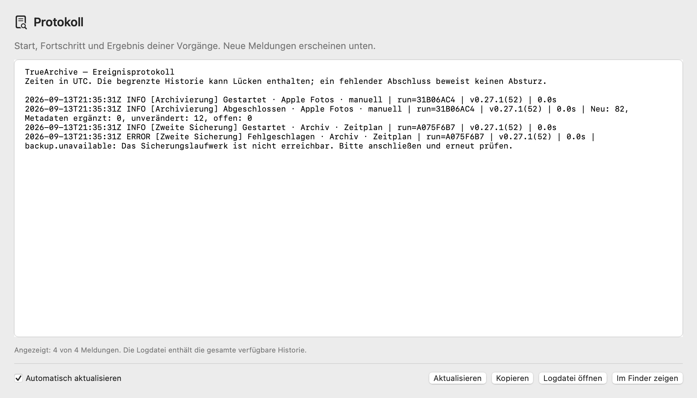

Handbuch für Alpha 0.39.0. Einige Abbildungen zeigen eine frühere Oberfläche.
Das TrueArchive-Handbuch.
Archivziel und Quellen auf einer Fläche. Einzelne Quellen oder alle angeschlossenen direkt archivieren.
Die „?“-Buttons in der App öffnen direkt das passende Kapitel. Weiter unten findest du die Release Notes und frühere Versionen.
Alpha 0.38.0 · Build 69 · 16. September 2026.
Installieren
Alpha 0.38.0 / Build 68 ist verfügbar. Archiviere Karten schrittweise, verbinde weitere Apple-Fotos-Konten und stelle Zeitpläne oder die freiwillige Speicherfreigabe direkt bei der Quelle ein. Aktualisiere alle Macs, die in dasselbe Archiv schreiben, bevor du neue Metadatenfunktionen nutzt. Herunterladen.
Du brauchst einen Mac mit macOS 15 oder neuer. Ein gemeinsames Paket enthält die App für Intel und Apple Silicon. Den Prüfstand deiner Version findest du in den Release Notes.
Lade die aktuelle Alpha auf der Website herunter und installiere sie so:
- Laufende Übernahmen beenden. Schließe die ältere TrueArchive-App vor einem Update.
- Das heruntergeladene App-Paket entpacken. Lege
TrueArchive.appin den Ordner „Programme“. - App öffnen. Beim ersten Start öffnet sich die normale Oberfläche mit Hinweisen zum Verbinden von Quellen und Archiv.
Für die Alpha brauchst du keine Anmeldung. Teile danach gern dein Feedback.
Diese Alpha ist nicht von Apple notarisiert. macOS kann deshalb beim ersten Öffnen eine zusätzliche Freigabe verlangen. Verwende das unveränderte Paket von der Website und prüfe, ob die Version stimmt.
macOS blockiert den ersten Start
Wenn macOS den Entwickler nicht bestätigen oder die App nicht auf Schadsoftware überprüfen kann, beschreibt Apple diesen Weg für Apps, deren Herkunft du vertraust:
- Versuche, TrueArchive aus „Programme“ zu öffnen, und schließe die Warnmeldung.
- Öffne Systemeinstellungen → Datenschutz & Sicherheit. Scrolle zum Abschnitt „Sicherheit“.
- Klicke bei TrueArchive auf „Dennoch öffnen“ und bestätige anschließend mit „Öffnen“.
Diese Ausnahme gilt für die App. Bei einer Meldung über eine beschädigte App oder erkannte Schadsoftware, oder wenn die Freigabe fehlt, melde uns den genauen Wortlaut. Schalte den Schutz deines Mac nicht pauschal ab. Apples Erklärung zum ersten Start.
Lies die Release Notes zu deinem App-Paket. Dort findest du auch den Link zur passenden Prüfsumme.
Gemeinsamer Teststand: Ab 0.39 kannst du unter App-Updates „Geprüfte Testversionen erhalten“ auf beiden Macs einschalten. Beide beziehen dasselbe zentral geprüfte Paket. Ohne diese Option erhältst du die freigegebenen Versionen. Version und Buildnummer stehen direkt daneben; das Ausschalten setzt die installierte Version nicht zurück. Ein offline befindlicher Mac aktualisiert sich erst bei seiner nächsten Verbindung und im sicheren Leerlauf.
App-Updates
Gemeinsame Mac-Updates: TrueArchive bereitet das Update für alle angemeldeten Mac-Benutzer gemeinsam vor. Neue Archivaufträge warten; laufende oder pausierte Übertragungen müssen zuerst enden. Bereits aktive Fotos-Zugänge starten nach dem geprüften Austausch in ihrer bisherigen Sitzung wieder. Ausgeschaltete Zugänge bleiben aus, Kopplungen und Einstellungen erhalten.
Die App muss gemeinsam im Ordner Programme liegen. Ältere TrueArchive-Versionen und Fotos-Zugänge einmal regulär schließen. Bei einer wartenden Sitzung nennt die App die erforderliche Aktion unter „App-Updates“; anschließend „Installation erneut vorbereiten“ wählen. Ein unklar abgebrochenes Update verlangt einen regulären Mac-Neustart; danach prüft TrueArchive den Paketstand vor der Weiterarbeit. Fotoerlaubnisse bleiben deine Entscheidung.
Alpha 0.38.0 ist auch über den Updatekanal verfügbar. Wähle im Menü TrueArchive → Nach Updates suchen …. Lass eine laufende Übernahme vorher enden; die App wartet mit der Installation, solange Archivarbeit offen ist. Alternativ kannst du das Paket von der Website installieren. Deine gespeicherten Quellen und das Archiv bleiben erhalten.
Ab Version 0.6.0 sind automatische App-Updates voreingestellt. TrueArchive prüft ungefähr täglich, solange die App läuft und der Mac wach ist. Ein neues, geprüftes Paket wird im Leerlauf installiert; anschließend startet die App neu.
Während einer Prüfung, Übernahme, Pause oder Verschlagwortung wartet das Update. Auch eine offene Einrichtung oder Importvorschau verhindert einen automatischen Neustart. Das gilt ebenso für eine erhaltene Vorschau in einem gerade zugeklappten Quellenbereich. Während des Updatevorgangs starten keine neuen Archivaufträge.
Unter TrueArchive → Einstellungen → App-Updates kannst du die Automatik ausschalten. „Jetzt nach Updates suchen“ bleibt für manuelle Updates verfügbar. Das geht auch über das TrueArchive-Menü; „App-Updates …“ im Menüleistenfenster öffnet die Einstellung.
Die eigene Moduswahl ist während eines Updates gesperrt. Eine Automatik-Auswahl im Update-Dialog gilt für folgende Updates; sie nimmt ein bereits vorbereitetes Update nicht zurück. Bei einer gestörten Verbindung oder einem Installationsfehler kannst du später erneut prüfen.
Einmaliger Wechsel von 0.5.0 und älter: Installiere die erste Ausgabe mit Updater noch manuell von der Website. Ältere Apps können sich diese Funktion nicht selbst nachladen. Die Paketsignatur bestätigt die Herkunft des Updates; der Pilot ist weiterhin nicht von Apple notarisiert.
Nicht auf 0.7.x zurückwechseln: Sobald die Alpha 0.8.0 die lokale Einrichtung im neuen Schema 2 gespeichert hat, können Versionen 0.7.x diese Einstellungen absichtlich nicht lesen. So wird ein begrenzter Fotos-Abgleich nicht versehentlich als unbegrenzt ausgeführt. Das Archivformat und bereits archivierte Dateien bleiben unverändert.
Lokale Einstellungen ab 0.13.0: Die neue Quellart wird im Einstellungsschema 3 gespeichert. Ältere Apps können diese Einstellungen absichtlich nicht laden. Bestehende Quellen und der gewählte Fotos-Zeitraum werden beim Wechsel aus Schema 1 oder 2 erhalten.
Optionaler lokaler Metadatenindex
Optional ab Alpha 0.38.0. Öffne TrueArchive → Einstellungen → Leistung und aktiviere „Lokalen Metadatenindex verwenden“. Die Option ist zunächst aus und gilt auf diesem Mac für die geprüften XMP-Zuordnungen aller Quellen.
Beim Archivieren merkt sich TrueArchive abgeleitete Metadaten auf dem Mac. Spätere Abgleiche können dieselben XMP-Zuordnungen schneller auswerten, auch nach einem App-Neustart. Alle XMPs werden weiterhin gelesen und Änderungen geprüft. Downloads, Kopieren und vollständige Originalprüfungen bleiben nötig; die Beschleunigung hängt deshalb vom Archiv und vom Vorgang ab.
Der Index enthält keine Bilder. Die Datenbank ist auf 64 MiB und 25.000 Einträge begrenzt. Originale und XMPs im Archiv bleiben maßgeblich. Ist der Index nicht nutzbar, läuft die normale Prüfung weiter. Unter „Lokalen Index leeren“ kannst du ihn entfernen; bei aktivierter Option baut er sich beim nächsten Abgleich neu auf. Ausschalten lässt vorhandene Cachedateien liegen, verwendet sie aber nicht mehr.
Ändern und Leeren sind während laufender Archivarbeit gesperrt. Der Index ist pro macOS-Benutzer lokal, wird nicht zwischen Macs synchronisiert und gehört weder ins Archiv noch in eine Sicherung des Archivs.
Sprache wählen
Unter TrueArchive → Einstellungen → Allgemein → Sprache / Language wählst du System, Deutsch oder English. Bei „System“ verwendet TrueArchive die erste unterstützte Sprache aus den bevorzugten Systemsprachen. Ist weder Deutsch noch Englisch dabei, wird Englisch verwendet. Deine ausdrückliche Auswahl bleibt auf diesem Mac gespeichert.
Navigation, Einstellungen und die Zusammenfassung des letzten Quellenabgleichs wechseln sofort. Bereits angezeigte einzelne Fehlermeldungen behalten ihre Sprache bis zur nächsten Aktion. Systemeigene Dialogelemente und Update-Dialoge verwenden die von macOS gewählte Sprache. Laufende Archivarbeit wird durch die Sprachwahl nicht neu gestartet. Eigene Quellnamen, Dateinamen, Pfade und archivierte Metadaten bleiben unverändert. Die Sprache automatischer Schlagwörter wählst du separat in den Quelleneinstellungen (bis 0.17.3 in den Archiveinstellungen); importierte Metadaten werden nicht übersetzt.
Die Website wählt zunächst anhand deiner bevorzugten Browsersprachen, mit Englisch als Rückfall. Unten auf jeder Seite kannst du über DE / ENG wechseln. Deine Auswahl bleibt gespeichert, wenn der Browser dies erlaubt. Die Sprachlinks funktionieren auch ohne JavaScript. Wieder automatisch nach Browsersprache wählen.
Dein erstes Archiv
- Archiv verbinden. Wähle oben bei „Archivziel“ einen neuen leeren Archivordner, dein vorhandenes TrueArchive-Archiv oder direkt einen vorhandenen Bildordner. Das Ziel benötigt APFS oder HFS+.
- Quelle hinzufügen. Verbinde über „Quelle hinzufügen“ Apple Fotos, eine SD-Karte, eine Festplatte, lokale Bildordner, einen Google-Takeout-Export oder ein Immich-Konto. Verbindung und Einstellungen öffnen sich auf derselben Arbeitsfläche.
- Umfang prüfen und starten. Kontrolliere den Quellordner samt Unterordneroption beziehungsweise den Aufnahmezeitraum. „Archivieren“ an einer lokalen Quelle oder Apple Fotos startet direkt; „Alle angeschlossenen archivieren“ startet den Sammellauf. Bei Immich wählst und prüfst du zuerst die gewünschten Uploads.
Kurze Hinweise auf der Arbeitsfläche zeigen, was noch fehlt. Sobald mindestens eine Quelle verbunden und das Archiv geprüft ist, merkt sich TrueArchive die Einrichtung. Dieser Abschluss startet keinen Import. Quellen, Archiv und ein optionaler Fotos-Aufnahmezeitraum bleiben auf diesem Mac gespeichert. Zeitpläne und automatische Schlagwörter schaltest du gesondert ein.
Die Richtung ist immer Quelle → Archiv. Die Übernahme liest aus den Quellen. Nur die separat bestätigte optionale Speicherfreigabe darf danach geprüfte Quelldateien endgültig entfernen. Auch wenn du später selbst dort eine Datei löschst, bleibt die Archivkopie erhalten.
Vorhandenen Bildordner als Archiv verwenden
Vorhandenen Ordner verwenden: Wähle deinen vorhandenen Bildordner als Ziel und verwende ihn direkt. Eine vollständige Bestandserfassung ist nicht erforderlich.
- Archivordner wählen. Öffne oben „Archiv & Pflege“ und wähle deinen vorhandenen Ordner auf einem unterstützten Laufwerk mit APFS oder HFS+. Genau dieser Ordner wird das Archiv.
- Neue Bilder übernehmen. Starte den Abgleich deiner gewünschten Quelle oder aller verbundenen Quellen. Neue Medien und ihre XMP-Dateien werden nach Jahr → Monat → Tag abgelegt.
Beim Verbinden bleiben vorhandene Medien und XMP-Dateien unverändert und an ihrem Platz. Es werden weder alle Bilder gelesen noch fehlende XMP-Dateien im Altbestand ergänzt. TrueArchive legt nur seine kleine Verwaltung im versteckten Ordner .bildarchiv an; eine zusätzliche Datenbank oder ein dauerhafter Prüfcache ist nicht nötig.
Was wird beim Import verglichen? TrueArchive prüft die passenden Zielordner und schützt vorhandene Dateien vor Überschreiben. Bereits zugeordnete Dateien dort können wiedererkannt werden. Bilder unter anderen Namen, an anderen Stellen oder mit geändertem Aufnahmedatum können nochmals abgelegt werden – auch wenn sie früher mit TrueArchive archiviert wurden. Unklare Metadatenzuordnungen werden nicht durch Überschreiben aufgelöst.
Für einen Vergleich der gesamten Sammlung kannst du später ausdrücklich „Duplikate prüfen“ starten. Diese getrennte Prüfung darf länger dauern und ist keine Voraussetzung für einen Import. Die Verbindung des Ordners ist kein Nachweis, dass alle früher abgelegten Dateien vollständig oder fehlerfrei sind.
Wenn 0.17.0 bereits mit der Erfassung begonnen hat: Bereits ergänzte XMP-Dateien bleiben erhalten. Ein belegter offener Schreibvorgang wird zunächst sicher abgeschlossen; anschließend wird der Ordner direkt weiterverwendet. Die restliche Sammlung wird nicht automatisch weiter erfasst. Unklare oder beschädigte Vorgangsdaten bleiben erhalten und müssen geklärt werden.
Andere unterbrochene Importe: TrueArchive zeigt den offenen Vorgang an. Erst wenn du die Wiederherstellung startest, werden die nötigen Nachweise geprüft. Bei älteren Archivformaten kann diese ausdrückliche Prüfung die gesamte Sammlung betreffen und länger dauern. Ohne gültige Nachweise werden keine Dateien verändert.
Beim Verbinden und gewöhnlichen Import bleiben Dateipakete geschlossen. Fotomediatheken, Programme und andere Finder-Pakete bleiben unverändert. Ein Paket selbst kann nicht als Archivziel dienen. Vorhandene Ordner werden nicht automatisch umsortiert.
Eine Arbeitsfläche zum Archivieren

Oben steht das gemeinsame Archivziel in einer blau hervorgehobenen Fläche mit Foto-auf-Festplatte-Symbol. Du siehst den vollständigen Laufwerks- und Ordnernamen, den Verbindungsstand und den zuletzt bekannten freien Speicher. Blau kennzeichnet das gemeinsame Ziel. „Archiv bereit“ bedeutet, dass gearbeitet werden kann; es bestätigt nicht die Vollständigkeit aller Bilder.
Direkt darunter steht Automatik mit dem nächsten geplanten Abgleich beziehungsweise dem Wartegrund. Mit „Pausieren“ verhinderst du künftige automatische Starts; „Fortsetzen“ erlaubt sie wieder. Ein laufender Vorgang wird dort nicht abgebrochen. Manuelles Archivieren bleibt möglich. Zeitpläne einstellen.
Jede Quelle hat eine feste Zeile mit Name, tatsächlichem Ordner oder Aufnahmezeitraum, Verbindung und Ergebnis. „Archivieren“ startet eine eingerichtete lokale Quelle oder Apple Fotos mit einem Klick im Leerlauf. Dabei wird ihr vollständiger eingestellter Umfang neu geprüft. Eine offene Vorschau dieser Quelle wird ersetzt; andere Quellen behalten ihre Vorschauen und Berichte. Immich „Auswählen …“ öffnet dagegen die bewusste Upload-Auswahl.
Einstellungen, Vorschau und Ergebnis öffnen direkt unter der betreffenden Quelle. Es gibt jeweils einen aufgeklappten Bereich, dessen Kopf Quelle und Archivziel nennt. Andere Quellen bleiben in derselben Liste. Schließen klappt den Bereich zu; es folgt keine Kette von Unterseiten. Über „Quelle hinzufügen“ ergänzt du weitere Verbindungen.
Die Quelleneinstellungen zeigen Was archivieren?, Wann archivieren? und Automatische Schlagwörter. Lokale Optionen, Zeitpläne und Schlagwörter wirken direkt. Den Zeitraum jeder Quelle bestätigst du mit „Zeitraum übernehmen“. „Änderungen verwerfen“ oder Schließen ohne Übernahme verwirft den Entwurf und erhält den gespeicherten Bereich. Während laufender Archivarbeit bleiben Änderungen gesperrt.
Start- und Enddatum je Quelle
Öffne die Einstellungen einer Quelle und unter „Aufnahmedatum“ → „Zeitraum“ die gewünschten Grenzen. Bei Immich steht der aufklappbare Zeitraum direkt über der Upload-Auswahl. „Zeitraum übernehmen“ speichert die Auswahl für diese Quelle, auch nach einem Neustart.
- Nur „Ab“: Alle Aufnahmen ab diesem Tag, auch passende Bilder, die später hinzukommen. Es gibt kein Enddatum.
- Nur „Bis“: Alle Aufnahmen bis einschließlich dieses Tages, ohne Startgrenze.
- „Ab“ und „Bis“: Nur der gewählte Zeitraum. Beide Grenztage zählen vollständig mit.
- „Alle Aufnahmen“: Kein Datumsfilter. Ein Enddatum vor dem Startdatum wird nicht gespeichert.
Der gespeicherte Zeitraum gilt für Vorschauen, direkte Einzel- und Sammelübernahmen, vorhandene Zeitpläne und die Sichtung derselben eingerichteten Platte. Ein Startdatum allein startet keinen neuen Zeitplan: Aktiviere diesen bei Bedarf separat. Google-Takeout und Immich bleiben manuell.
Lokale Quellen verwenden eingebettete Kameradaten, ersatzweise das Änderungs- oder Erstellungsdatum der Datei. Takeout verwendet das Aufnahmedatum aus den Google-Begleitdaten, ersatzweise eingebettete Kameradaten. Apple Fotos und Immich verwenden das Aufnahmedatum der Aufnahme. Zeitpunkte werden in der gespeicherten Zeitzone eingeordnet; Kameradaten ohne Zeitzone behalten ihren Kalendertag. Nicht zuordenbare Daten bleiben bei aktivem Filter ausgeschlossen. Die Vorschau nennt ausgelassene Dateien als Information; sie sind keine Importfehler.
Änderungen verwerfen die alte Vorschau beziehungsweise Immich-Auswahl. Solange ein geänderter Entwurf offen ist, warten Starts dieser Quelle und Sammelübernahmen. Andere Quellen bleiben einzeln bedienbar. Bereits archivierte Dateien bleiben erhalten; eine Zeitraumänderung entfernt nichts. Zugehörige Live-Photo-Bestandteile werden gemeinsam mit der passenden Aufnahme übernommen.
Einstellungen ab 0.22.0: Schema 6 bewahrt die neuen Einschränkungen. Ältere Apps können diese Einstellungen absichtlich nicht laden. Bestehende Quellen bleiben beim Update ohne neuen Datumsfilter; der bisherige Apple-Fotos-Zeitraum bleibt erhalten.
Verbindungszeichen und Text erklären den zuletzt geprüften Stand. Ein grünes Zeichen bedeutet erreichbar beziehungsweise bei Apple Fotos vollen Zugriff. Es bestätigt keinen vollständigen Import und keine Verfügbarkeit jedes iCloud-Originals. Fehlende Freigaben, getrennte Laufwerke und offene Probleme haben konkrete Hinweise.
Die feste Arbeitsanzeige nennt Vorgang, tatsächlich bearbeitete Quelle und Anlass, etwa „Manuell“ oder „Automatisch“. Bekannte Mengen und Fortschritt stehen dort mit den passenden Pause- und Abbruchaktionen. Während der Arbeit kannst du Ergebnisse ansehen und weitere lokale Quellen für danach vormerken; der laufende Auftrag und seine Einstellungen werden dadurch nicht verändert. Eine laufende Verschlagwortung lässt sich nach der gezielten Bestätigung für eine angeforderte Archivierung unterbrechen.
Restzeit ab Alpha 0.29.0: Hauptfenster und Menüleiste zeigen dieselbe Schätzung. TrueArchive lernt beim normalen Archivieren, wie lange Kopieren, Metadatenpflege und Prüfen mit dieser Quelle und Archivplatte dauern. Neue Dateien, Metadatenänderungen und bereits vorhandene Bilder werden unterschieden. Du musst dafür nichts einstellen.
Ab Alpha 0.38.0 ersetzt eine gerundete Angabe wie „Noch etwa 20 Minuten“ die bisherigen Spannen. Solange die Messungen zu stark schwanken, steht dort „Restzeit noch nicht verlässlich“. Bei ausreichend stabilen Messwerten erscheint zusätzlich eine voraussichtliche Fertigstellungszeit. Prüfen und sicheres Abschließen sind enthalten; die Schätzung kann bei langsamerer Arbeit steigen. „Dieser Arbeitsschritt“ meint nur die aktuelle Phase. Bei weiteren Quellen mit noch unbekanntem Umfang steht ausdrücklich „Diese Quelle“.
Eine Pause oder der Ruhezustand wird nicht als langsame Plattengeschwindigkeit gelernt. Bei länger fehlendem Fortschritt bleibt die Zeit offen. Photos-Etappen und bekannte Wartezeiten werden berücksichtigt; nach einer Mediathekänderung wird neu geschätzt. Bei Immich endet die Vorschauzeit an deiner Auswahlprüfung; die spätere Archivierung bekommt eine eigene Schätzung. Unabhängig nachlaufende Verschlagwortung und Immich-Vorschauen gehören nicht zur Importzeit.
„Letzte Ergebnisse“ führt zu den letzten Berichten der Quellen in dieser App-Sitzung. Erfolg und offene Einträge werden gemeinsam gezeigt: „80 archiviert · 2 offen“ ist ein Teilerfolg. Die Probleme lassen sich aufklappen und führen zur passenden erneuten Prüfung, Einstellung oder zum Supportbericht. Ein neuer Versuch ersetzt den Bericht dieser Quelle; nach einem Neustart gibt es noch keinen dauerhaften Ergebnisverlauf.
„Archiv & Pflege“ klappt die Zielverbindung und vorhandenen Pflegeaktionen an derselben Stelle auf: Archivstatus, Wiederherstellung bei einem tatsächlichen Befund, Duplikatprüfung und Schlagwörter. Über „Archiv ändern …“ beziehungsweise beim ersten Mal „Archivordner wählen …“ wählst du den gewünschten Ordner. Im Dateidialog kannst du „Neuer Ordner“ verwenden und mit „Als Archiv verwenden“ bestätigen. Der gewählte Ordner selbst wird das Archiv; das Ziel benötigt APFS oder HFS+.
Die Finder-Aktionen öffnen den tatsächlichen Archiv- beziehungsweise lokalen Quellordner. Bei geeigneten externen Volumes steht außerdem Auswerfen bereit, sowohl an Quellen als auch am Archivziel. Laufwerke sicher trennen. App-Einstellungen, Hilfe und Support erreichst du über die beschrifteten Aktionen und das macOS-Menü.
„Zielwechsel noch offen“: Die letzte Auswahl konnte nicht übernommen werden. Weitere Übernahmen bleiben gesperrt, auch nach einem App-Neustart. Wähle das gewünschte Ziel erneut und warte auf „Archiv bereit“. Der bisherige Ordner wird nicht still weiterverwendet.
Ein Archivwechsel macht bisherige Vorschauen ungültig. Änderst du „Unterordner einbeziehen“ bei einer Quelle, prüfst du diese Quelle neu; die Auswahl einer anderen Quelle bleibt erhalten. Nach einem App-Neustart erstellst du ebenfalls eine neue Vorschau.
Alle angeschlossenen archivieren
Mit „Alle angeschlossenen archivieren“ startest du im Leerlauf mit einem Klick einen manuellen Sammellauf: zuerst die eingerichteten lokalen Quellen in ihrer Reihenfolge, einschließlich Takeout, danach Apple Fotos. Für Ordner gilt die jeweilige Unterordnerauswahl, für Apple Fotos der bestätigte Aufnahmezeitraum. Ohne Datumsfilter werden alle erreichbaren Aufnahmen abgeglichen.
Immich bleibt separat: Das Rundenergebnis kennzeichnet diese Konten mit „Auswahl erforderlich“. Öffne bei der gewünschten Immich-Quelle „Auswählen …“, um ihre Uploads zu prüfen und anschließend zu archivieren. Auch eine zuvor vorbereitete Immich-Auswahl wird vom Sammelknopf nicht übernommen.
Offene Vorschauen lokaler Quellen und von Apple Fotos werden ersetzt. Der Knopf prüft deren vollständigen eingerichteten Umfang neu und übernimmt neue oder geänderte Inhalte. Bisherige Teilauswahlen begrenzen diesen Lauf nicht. Für eine gezielte Auswahl öffnest du stattdessen die Vorschau direkt an der einzelnen Quelle.
Die Quellenliste zeigt die laufende und die folgenden Quellen. Doppelte Klicks erzeugen keinen zweiten Sammellauf. Weitere lokale Quellen kannst du als getrennte einmalige Aufträge für danach vormerken; die Reihenfolge und Einstellungen des laufenden Sammellaufs ändern sich dadurch nicht. Das Ergebnis jeder Quelle öffnet sich direkt an ihrer Zeile. Neue und vorhandene Inhalte, ergänzte Angaben, Varianten und offene Fälle bleiben zusammen. Fehlende Quellen werden mit Grund übersprungen; andere Quellen können weiterlaufen. Bei einem unsicheren Archiv oder geänderter Einrichtung stoppt der Lauf.
Lokale Arbeit lässt sich mit „Pausieren“ anhalten und mit „Fortsetzen“ weiterführen. „Abgleich abbrechen“ beendet den gesamten Durchlauf; spätere Quellen starten dann nicht mehr. Apple Fotos unterstützt Abbrechen, aber noch keine Pause. Bereits archivierte Dateien bleiben erhalten und werden beim nächsten Start wiedererkannt.
Deine Zeitpläne und deren globale Pause bleiben unverändert. Für Apple Fotos muss voller Zugriff bereits erlaubt sein. Laufende Archivarbeit und App-Updates verhindern einen zweiten gleichzeitigen Durchlauf.
Schnellaktionen in der Menüleiste

Klicke auf das TrueArchive-Laufwerk in der macOS-Menüleiste. Das kompakte Fenster zeigt dasselbe Archivziel und direkt darunter dieselbe Automatik wie das Hauptfenster. „Öffnen“ holt das vorhandene App-Fenster nach vorn.
Im Leerlauf findest du „Alle angeschlossenen archivieren“ und bis zu drei startfähige lokale Quellen beziehungsweise Apple Fotos mit „Archivieren“. Die Reihenfolge entspricht der Arbeitsfläche. „Weitere Quellen …“ öffnet diese Liste im Hauptfenster. Bei Immich führt „Auswählen …“ direkt zur betreffenden Auswahl.
Während eines Vorgangs ersetzt seine Steuerung die Schnellstarts. Quelle, Anlass und bekannter Fortschritt stimmen mit dem Hauptfenster überein. Apple Fotos und Immich bieten Abbruch, aber keine Pause. Eine Pause wird erst angezeigt, wenn die Arbeit tatsächlich pausiert. Ein Abbruch bleibt bis zum sicheren Ende des Vorgangs als laufend erkennbar.
„Ergebnis ansehen …“ öffnet einen offenen Quellenbericht an der richtigen Stelle. Fehlt das Archiv, führt „Archiv & Pflege …“ direkt zur Zielverbindung. Einstellungen, Finder und Support bleiben erreichbar. Beenden wartet auf das sichere Ende laufender Arbeit. Das Öffnen des Menüs startet keinen Abgleich und verändert keinen Termin.
Speicher an einer Quelle freigeben
Standardmäßig ausgeschaltet. Vorgaben: mindestens 20 % frei, älteste Aufnahmen zuerst, zweite Sicherung erforderlich und Favoriten geschützt. Prüfe vor der ersten Nutzung mit deiner Quelle die vorgeschlagenen Dateien.
Öffne direkt an einer Quelle den Tab „Speicher freigeben“. Die Übernahme ins Archiv liest weiterhin nur aus der Quelle. Dieser getrennte, freiwillige Vorgang darf nach deiner Bestätigung bereits archivierte Quelldateien endgültig löschen. Die Archivkopien bleiben erhalten.
Quelle und Ziel einstellen
Unterstützt werden lokale SD-Karten, externe Laufwerke und ausdrücklich gewählte Medienordner. Quelle und Archiv müssen auf nachweislich unabhängigen physischen Datenträgern liegen; eine andere Partition desselben Laufwerks genügt nicht. Die verlangte zweite Sicherung muss ebenfalls unabhängig liegen. Archiv- und Sicherungsordner sowie überlappende Quellen sind ausgeschlossen.
Apple Fotos, Immich, Google Takeout und Lightroom-Exporte erhalten im Tab eine Erklärung. Dort werden keine Quelldateien gelöscht. Auch Netzwerkordner, Cloud-Synchronisationsordner, Mediatheken und verwaltete Immich-Ordner sind keine Freigabeziele.
- Wähle „Mindestens frei halten“: 20, 40, 60 oder 80 %, oder einen eigenen Wert von 5 bis 90 %. Gemessen wird der freie Platz des ganzen Laufwerks. Entfernt werden dürfen nur berechtigte Dateien im eingerichteten Quellenumfang.
- Lege die Reihenfolge fest: „Älteste Aufnahmen“ bewahrt neuere möglichst lange; „Größte Aufnahmen“ schafft Platz mit weniger entfernten Aufnahmen; „Älteste Videos“ lässt Fotos auf der Quelle. Reichen Videos nicht aus, bleibt das Ziel offen.
- Unter „Was bleibt erhalten?“ sind die zweite Sicherung und der Favoritenschutz voreingestellt. Das Abschalten der zweiten Sicherung verlangt eine eigene Bestätigung: Danach kann das Archiv die einzige verbleibende Kopie sein.
- Fehlt Schreibzugriff, wähle „Zugriff erlauben …“ und bestätige genau denselben Quellenordner erneut. „Archiv verbinden“, „Zweite Sicherung einrichten …“ oder „Jetzt sichern“ führen bei fehlenden Voraussetzungen zur passenden Aktion.
Prüfen und bewusst freigeben
„Freigabe prüfen“ löscht nichts. Die begrenzte Vorschau zeigt höchstens 128 Aufnahmegruppen mit zusammengehörigen Dateien, Datum und geschätztem Platz. Du kannst Gruppen abwählen. Diese Auswahl gilt nur für die manuelle Freigabe. Eine bereits vorgemerkte Automatik wartet, solange du diese Vorschau geöffnet hast. Nach dem Schließen oder Tabwechsel darf sie nach der bestätigten Regel auch abgewählte Aufnahmen entfernen. Der rote Knopf nennt den geschätzten Umfang; erst die anschließende konkrete Bestätigung erlaubt die endgültige Entfernung. Bei größeren Quellen können danach weitere Abschnitte geprüft werden.
Vor einer Entfernung werden die aktuellen Originalbytes, ihre Herkunft und sämtliche benötigten Metadaten und Begleitdateien im Archiv nachgewiesen. Bei verlangter zweiter Sicherung werden genau diese aktuellen Dateien in einem bestätigten Sicherungsstand geprüft. Ein grüner Importstatus oder ein früher erfolgreicher Backup-Lauf allein genügt nicht. Unklare Gruppen, unbekannte Begleiter und nicht vollständig erhaltene Metadaten bleiben auf der Quelle; ein RAW mit ungeklärter Nitro-Begleitdatei wird nicht teilweise freigegeben.
Aufnahmen ohne verlässliches Datum sowie neue oder geänderte Dateien bleiben geschützt; Aufnahme und letzte Änderung müssen mindestens 24 Stunden zurückliegen. Mit eingeschaltetem Favoritenschutz bleiben auch fünf Sterne und Favoriten erhalten. Videos ohne vollständig lesbaren Bewertungsnachweis bleiben ebenfalls geschützt. Das betrifft in dieser Version MOV- und MP4-Videos, weil eingebettete Bewertungen noch nicht vollständig geprüft werden können. Mit „Älteste Videos“ und dem voreingestellten Favoritenschutz können diese Videos deshalb noch keinen Platz freigeben. Sind zu wenige geeignete Gruppen vorhanden, nennt die Ansicht den offenen Zielwert und die Schutzgründe. Die Dateigröße ist eine Schätzung; tatsächlicher Platz wird nachgemessen.
Automatik, Anhalten und Unterbrechung
„Automatisch Speicher freigeben“ zeigt zuerst die konkrete Regel zur Bestätigung. Das Einschalten selbst löscht nichts. Die Regel greift erst nach einem künftigen vollständig oder teilweise erfolgreichen Import dieser Quelle. Abgebrochene Importe, App-Start und bloßes Anstecken lösen keine Freigabe aus. Fehlt die zweite Sicherung, wartet die bereits vorgemerkte Freigabe auf einen passenden Sicherungsabschluss; „Jetzt sichern“ startet die Sicherung bewusst. Der Import kann normal enden.
Spätere Läufe derselben bestätigten Regel fragen nicht erneut. Änderungen an Ziel, Reihenfolge, Schutzregeln oder den gebundenen Quellen-, Archiv- oder Sicherungsverbindungen entziehen die Aktivierung. Auf einem anderen Mac ist eine neue Bestätigung nötig. „Aus“ verhindert künftige Freigaben. Während eines Laufs zeigt der Tab Phase und Fortschritt; „Anhalten“ wartet auf den sicheren Einzelabschluss.
Die Freigabe verwendet keinen Papierkorb. Bei einem Abbruch können bereits einzelne Quelldateien fehlen; ihre geprüften Archivkopien bleiben erhalten. Nach einem unterbrochenen Vorgang musst du „Unterbrochene Freigabe klären“ ausdrücklich wählen. Verbliebene Dateien werden ohne Überschreiben zurückgelegt. Das setzt keine Löschung fort: Anschließend ist eine neue Prüfung und Freigabe nötig. Der letzte Abschluss bleibt unter „Letzte Freigabe“ sichtbar. Für eine Wiederherstellung nutze das Archiv oder die zweite Sicherung.
Zweite Sicherung und Wiederherstellung
Ab Alpha 0.28.0: Unter „Archiv & Pflege“ gibt es eine verschlüsselte Sicherung auf einer anderen physischen Festplatte. Datumsstände erhalten auch frühere Dateifassungen.
- Zweite Sicherung einrichten … wählen und einen leeren Ordner auf einer anderen APFS-/HFS+-Festplatte angeben. Zwei Volumes derselben physischen Platte sind keine unabhängige Sicherung.
- Ein Passwort mit mindestens zwölf Zeichen wählen und außerhalb dieses Macs aufbewahren. TrueArchive hinterlegt zusätzlich eine Kopie im lokalen Schlüsselbund. Ohne Passwort lässt sich die verschlüsselte Sicherung nicht retten.
- Jetzt sichern wählen. Die Ordnerauswahl allein startet keine Sicherung. TrueArchive prüft das Archiv, sichert die Dateien und bestätigt danach den vollständigen Stand.
Alle regulären Archivdateien gehören dazu, auch noch nicht zugeordnete Medien und fremde XMPs. Unterbrochene Archivvorgänge zuerst reparieren. Unbekannte Verwaltungsdateien, Verknüpfungen, Paketordner oder eingebundene Untervolumes verhindern einen bestätigten Abschluss. Währenddessen fremde Metadateneditoren und ältere TrueArchive-Versionen schließen. Es entsteht kein atomarer Dateisystem-Snapshot.
Importe, Schlagwörter, Immich-Arbeit, Updates, Auswerfen und Beenden berücksichtigen die gemeinsame Arbeitssperre. Für einen gewünschten Import lässt sich die Sicherung anhalten; erst nach dem tatsächlichen Prozessende startet der Import. Frühere bestätigte Stände bleiben erhalten. Alte Stände werden nicht automatisch gelöscht.

Hetzner Storage Box einrichten
Neu in Alpha 0.38.0: Wähle unter Archiv & Pflege → Zweite Sicherung einrichten … das Ziel Hetzner Storage Box. Terminalbefehle, eigene Schlüssel und das Einbinden eines Netzlaufwerks sind nicht nötig.
1. Konto und Speicher bestellen
- Hetzner Accounts öffnen und Register now / Registrieren wählen. Kontakt- und Rechnungsdaten eintragen, E-Mail bestätigen und die angeforderte Zahlungsart ergänzen. Falls Hetzner eine Identitätsprüfung verlangt, diese direkt dort abschließen. Optional Zwei-Faktor-Anmeldung aktivieren. Offizielle Kontoanleitung.
- In der Hetzner Console ein Projekt öffnen und Storage Boxes → Create Storage Box wählen. Standort und eine zur belegten Archivgröße passende Kapazität auswählen; Reserve für neue Fotos und ältere Dateistände einplanen. Aktuelle Größen und Preise.
- Äußere Erreichbarkeit / External Reachability einschalten. Ein eigenes Storage-Box-Passwort festlegen und im Passwortmanager aufbewahren. Nach Bereitstellung den Benutzernamen, etwa
u123456, oder die Serveradresse kopieren. Bestellhilfe von Hetzner.
Bestelle eine Storage Box. Ein Cloud-Server oder Storage Share ist für diese Verbindung nicht vorgesehen. Die zusätzliche Option „SSH Support“ wird von TrueArchive nicht benötigt; die App verwendet den bereits verfügbaren Dateiübertragungszugang. Anschlüsse und Einstellungen bei Hetzner.
2. In TrueArchive verbinden
- Hetzner Storage Box wählen, Benutzername oder Serveradresse und Storage-Box-Passwort eintragen. Verbindung prüfen bestätigt den Zugang. Dies ist noch keine Sicherung.
- Neue Sicherung wählen. Ein separates Sicherungspasswort mit mindestens zwölf Zeichen festlegen, wiederholen und die unabhängige Aufbewahrung bestätigen. Es verschlüsselt die Fotos und XMP-Dateien vor der Übertragung. Das Hetzner-Kontopasswort und das Box-Passwort ersetzen es nicht.
- Hetzner-Sicherung einrichten, anschließend Jetzt sichern wählen. Die App verwendet automatisch den Sicherungsnamen TrueArchive. Für mehrere getrennte Archive lässt sich unter „Anderen Sicherungsnamen verwenden“ ein eigener Name angeben; diesen zusammen mit dem Passwort aufbewahren. Pro Archiv ist derzeit ein Sicherungsziel eingerichtet. Ein Wechsel löscht keine bisherigen Sicherungen.
Verbindungs- und Sicherungspasswort liegen im Schlüsselbund dieses Macs. Bewahre das Sicherungspasswort zusätzlich außerhalb des Macs auf. Ein Zurücksetzen bei Hetzner entschlüsselt keine Sicherung. Ist schon eine Sicherung mit diesem Namen vorhanden, Vorhandene Sicherung und deren bisheriges Passwort verwenden.

3. Im Alltag und auf einem neuen Mac
Die erste Übertragung kann abhängig von Archivgröße und Internet-Upload lange dauern. Spätere Sicherungen übertragen neue und geänderte Daten; alte Stände bleiben erhalten. Warte auf Sicherung vollständig abgeschlossen. Bei Abbruch bleibt der vorherige bestätigte Stand nutzbar. Den täglichen Zeitplan bei Bedarf ausdrücklich aktivieren: TrueArchive muss geöffnet, der Mac wach, das Archiv angeschlossen und Internet verfügbar sein.
Zum Wiederherstellen Archiv aus Sicherung wiederherstellen … → Hetzner Storage Box wählen, Box-Zugang und Sicherungspasswort eingeben und Hetzner-Sicherungsstände öffnen wählen. Falls zuvor geändert, denselben Sicherungsnamen angeben. Datum wählen und in einen neuen leeren lokalen Ordner wiederherstellen. Die alte Festplatte und die Einstellungen des bisherigen Macs sind nicht nötig. Prüfe zunächst eine kleine Auswahl samt XMP.
Nach einer Änderung des Box-Passworts unter Einstellungen … → Zugang prüfen und speichern den neuen Zugang hinterlegen. Bei Verbindungsproblemen Internet und „Äußere Erreichbarkeit“ prüfen. Bei einer nicht bestätigbaren Serveridentität bleibt die Verbindung gesperrt. Verwendete Kapazität und Abrechnung siehst du in der Hetzner Console.
Links und Provision: Laut aktueller Hetzner-FAQ ist das Empfehlungsprogramm eingestellt. Die Links hier sind direkte Anbieterlinks; TrueArchive erhält dafür derzeit keine Provision. Stand: 16. September 2026.
Optional täglich sichern
Ein neuer Zeitplan beginnt mit der nächsten gewählten Uhrzeit. Ist der Mac dann aus, wird dieser erste Termin beim nächsten möglichen Lauf nachgeholt. Gespeicherte ältere Zeitpläne ohne Startzeit holen einmal beim nächsten möglichen Lauf nach.
Unter Einstellungen … die Uhrzeit wählen und Zeitplan auf diesem Mac aktivieren. Ein Mac ist verantwortlich; ausdrückliches Aktivieren auf einem anderen Mac überträgt den Zeitplan. TrueArchive muss geöffnet, der Mac wach und das Archiv angeschlossen sein. Das Sicherungsziel muss erreichbar sein: zweite Festplatte oder Internet für Hetzner. Ein verpasster Lauf wird einmal nachgeholt, ohne eine Runde für jeden verpassten Tag. Ausschalten lässt manuelle Sicherungen verfügbar.
Einen Stand oder einzelne Dateien wiederherstellen
Wiederherstellen → Archiv aus Sicherung wiederherstellen … funktioniert auch ohne Originalarchiv oder alte Mac-Konfiguration. Sicherungsordner öffnen, Passwort eingeben und Datum wählen. Beim gewählten Stand steht die vollständige Snapshot-ID. Bestätigte Stände besitzen einen verschlüsselten Abschlussbeleg. Einen unbestätigten Rettungsstand ausdrücklich freigeben; seine Vollständigkeit ist nicht belegt.
Gesamten Stand wiederherstellen … oder Dateien markieren und Auswahl wiederherstellen … wählen. Ein Ordner umfasst seinen gesamten Inhalt. Bei Einzelbildern auch das zugehörige Dateiname.Endung.xmp auswählen. Einen neuen leeren Zielordner außerhalb von Original und Sicherungsrepository angeben. Die Dateien erscheinen unter Archiv und werden vor Abschluss geprüft. Weitere Seiten sind im Katalog und Dateibrowser direkt erreichbar; Ordnerpfad und Eine Ebene zurück halten den Weg sichtbar.

Unterbrochene Wiederherstellung fortsetzen … akzeptiert nur das unveränderte eigene Ziel dieses Vorgangs. Ein ungeklärter Absturz mitten im Transfer erfordert einen neuen leeren Ordner. Gerettete Dateien samt danebenliegendem Wiederherstellungsprotokoll aufbewahren und vor einer Wiederaufnahme nicht fremd bearbeiten.
Ein bestätigter vollständiger Restore eines unterstützten Formats bietet Als Archiv verwenden. Originalmedien, XMP-Bytes und logische Kennungen bleiben erhalten; allein die physische Wurzelbindung darf sich ändern. Unbekannte Archiv-/XMP-Versionen bleiben als Dateirettung zugänglich. Beim Verbinden beginnen die Automatiken pausiert; erst nach Prüfung wieder zulassen. Vorhandene Quellen und Zeiträume bleiben eingerichtet.
Prüfen und ohne App retten
Struktur prüfen kontrolliert den Aufbau des Repositorys. Alle Sicherungsdaten lesen und prüfen liest zusätzlich sämtliche gespeicherten Datenblöcke. Die Strukturprüfung allein ersetzt diese volle Prüfung nicht. Beide Aktionen löschen keine Stände und entsperren nichts automatisch.
Normales restic 0.18.1 kann die Dateien mit dem Passwort unabhängig vom alten Schlüsselbund retten. Datenstände mit snapshots --json --tag truearchive-data-v1 auflisten, die vollständige Daten-ID wählen und ID:/ mit --verify in ein neues leeres Ziel wiederherstellen. Kein bewegliches latest, keinen technischen Beleg-/Zeitplanstand und niemals das Arbeitsarchiv als Ziel verwenden. Offizielle Anleitung.
Ein direkter restic-Restore kopiert den alten Marker ohne physische Neubindung. Zum sicheren Verbinden als Arbeitsarchiv den Wiederherstellungsweg der App in einen weiteren leeren Ordner verwenden. Versionshinweise und Prüfgrenzen.
Fotos eines anderen Mac-Benutzers hinzufügen
Ab Alpha 0.32.0: Jedes Apple-Konto verwendet einen eigenen Mac-Benutzer mit seiner eigenen Systemfotomediathek. TrueArchive sammelt die Fotos in einem gemeinsamen Archiv. Beim anderen Benutzer reicht die kleine App TrueArchive Fotos-Zugang.
- Den anderen Benutzer einmal einrichten. Unter macOS „Benutzer & Gruppen“ einen eigenen Benutzer anlegen. Dort mit dem zweiten Apple-Konto anmelden und in Apple Fotos die gewünschte Systemfotomediathek sowie bei Bedarf iCloud-Fotos einrichten. Ist das bereits erledigt, direkt weiter.
- Bei deinem Archiv-Benutzer beginnen. In TrueArchive Quelle hinzufügen → Apple Fotos → Fotos eines anderen Mac-Benutzers öffnen. Die Person auswählen. TrueArchive schlägt einen Quellennamen vor und macht den Fotos-Zugang unter „Programme“ direkt startbar. Liegt TrueArchive noch im Downloadordner, die App zuerst nach „Programme“ verschieben; fehlende Schreibrechte werden ausdrücklich angezeigt.
- Verbindung anfragen. Die Anfrage bleibt bis zu zehn Minuten offen. Du musst keinen Code und keine Apple-E-Mail-Adresse übertragen.
- Zum anderen Mac-Benutzer wechseln. Im Benutzermenü oder am Sperrbildschirm „Benutzer wechseln“ wählen, die Person auswählen und mit deren Mac-Anmeldepasswort anmelden. Nicht „Abmelden“ wählen: Dein Archiv-Benutzer muss angemeldet bleiben. Fehlt das Benutzermenü, in den Systemeinstellungen nach „Schneller Benutzerwechsel“ suchen und die Anzeige in Menüleiste oder Kontrollzentrum einschalten.
- Die kleine App öffnen. Unter „Programme“ oder über die Spotlight-Suche TrueArchive Fotos-Zugang öffnen. Wenn nötig Fotos-Zugriff erlauben wählen und vollständigen Zugriff bestätigen. Die Anfrage nennt den Mac-Benutzer, der die Fotos archivieren möchte. Mit Für [Name] freigeben genau diese Verbindung bestätigen. Hier brauchst du kein Archiv einzurichten.
- Zurückkehren und archivieren. Zum Archiv-Benutzer zurückwechseln. TrueArchive ergänzt die freigegebene Quelle automatisch. Unter „Zeitraum“ den gewünschten Beginn wählen, speichern und „Archivieren“ starten. Vorschau, Ergebnis und Schlagworteinstellungen gehören zu dieser Quelle. Ein Zeitplan ist zunächst aus.
Im Alltag
Der Fotos-Zugang liefert die Originale im Hintergrund. Sein Fenster darf geschlossen werden; die App muss weiterlaufen. Bei Anmeldung starten ist optional. Nach einem Mac-Neustart müssen beide Benutzer einmal angemeldet werden. Der Mac muss zum Archivieren wach sein. TrueArchive richtet keine automatische Benutzeranmeldung ein und weckt den Mac nicht.
Die kleine App kommt mit TrueArchive. Es ist kein separater Download nötig. Ihr Starteintrag in „Programme“ öffnet den mit TrueArchive gelieferten aktuellen Fotos-Zugang. Aktualisiere TrueArchive, wenn eine neue Version bereitsteht. Beende vor dem Ersetzen auch laufende Fotos-Zugänge anderer angemeldeter Benutzer. Falls eine spätere Version auch den kleinen Starter ändert, kann die Einrichtung verlangen, dessen bisherigen Eintrag im Finder zu verschieben und erneut bereitzustellen. Eine vorhandene abweichende App wird nicht überschrieben.
Wenn die Verbindung wartet
Ist der andere Benutzer abgemeldet oder dessen Fotos-Zugang geschlossen, warten diese Importe. Andere erreichbare Quellen können weiterarbeiten. Eine fehlende Fotos-Erlaubnis wird im anderen Mac-Benutzer erteilt. Vorübergehende Apple-Probleme brauchen zunächst eine erneute Verbindungsprüfung, keine neue Quelle.
Kann die bisherige Mediathek tatsächlich nicht mehr zugeordnet werden, ist eine neue ausdrückliche Freigabe nötig. Das kann auch bei nicht mehr verfügbarer Änderungshistorie passieren; die Meldung beweist allein keinen Wechsel der Mediathek. Name, Zeitraum, Schlagworteinstellungen und bisherige Archivherkünfte bleiben bei einer erneuten Freigabe erhalten; den Zeitplan bei Bedarf wieder aktivieren.
Abgelaufene oder abgebrochene Anfragen werden nicht still erneut freigegeben. Starte bei Bedarf eine neue Anfrage. Bestehende Verbindungen aus 0.31.0 mit dem früheren Code bleiben verwendbar, solange ihre Bindung gültig ist.
Abbruch und Wiederholung: Unvollständige Übertragungen gelten nicht als archiviert. Wiederholungen erkennen bereits vorhandene Originale; identische Aufnahmen aus verschiedenen Konten behalten ihre Herkunftsangaben. Apple-Fotos-Importe unterstützen Abbrechen, keine Pause. Entfernen einer Quelle löscht weder Fotos noch Archivdateien. Ist der Zugang dabei offline, im anderen Benutzer zusätzlich die Freigaben widerrufen.
Verbindungsschlüssel bleiben im jeweiligen Schlüsselbund. Der Zugang liest ausschließlich die freigegebene Mediathek; er schreibt kein Archiv und löscht keine Fotos. Eine Anmeldung allein bestätigt nicht, dass alle iCloud-Originale verfügbar sind.
Alpha-Einschränkung: Kleine Hintergrundabrufe beider Benutzer wurden geprüft. Vollständiges iCloud-Nachladen, Schlaf, Abmeldung und Neustart sind noch nicht abschließend erprobt. Kontrolliere das Ergebnis jeder Quelle; eine Verbindung allein bestätigt noch keine vollständige Übernahme.
Uploads aus Immich auswählen

In Alpha 0.22.0 enthalten. Die Verbindung unterstützt Immich 3.2.0 ohne Vorabversion. Du wählst eigene Uploads ausdrücklich aus. Immich wird weder nach Zeitplan noch durch „Alle angeschlossenen archivieren“ automatisch übernommen.
1. Jedes Konto einzeln verbinden
- Melde dich in Immich im gewünschten Konto an. Öffne über das Profil die Kontoeinstellungen und lege unter den API-Schlüsseln einen eigenen Schlüssel für TrueArchive an. Jedes Familienkonto braucht seinen eigenen Schlüssel; ein Admin-Schlüssel ersetzt die Schlüssel anderer Konten nicht. Immich-Hilfe zu API-Schlüsseln.
- Erlaube
user.read,asset.read,asset.download,assetFile.readundassetFile.download. Für die kleine Bildvorschau kommt optionalasset.viewhinzu. Schreib- oder Löschrechte für Aufnahmen sind nicht erforderlich. - Wähle in TrueArchive Quelle hinzufügen → Immich-Konto hinzufügen. Trage einen Anzeigenamen, die direkte HTTPS-Serveradresse, zum Beispiel
https://immich.example.com, und den Schlüssel ein. Klicke auf „Verbindung prüfen und speichern“ und kontrolliere das angezeigte Konto. Der Schlüssel wird ausschließlich im macOS-Schlüsselbund gespeichert. - Verbinde oben das tatsächliche Archivziel, bevor du eine Auswahl prüfst. Fehlt das Laufwerk, schließe es wieder an. Eine erneute Gesamtbestandserfassung ist dafür nicht nötig; ein anderer Ordner ersetzt das fehlende Archiv nicht.
Einstellungen ab 0.19.0: Sobald die App ihre lokale Quellenkonfiguration im neuen Format speichert, benötigen diese Einstellungen mindestens 0.19.0. Ältere Versionen können sie nicht öffnen. Die Medien im Archiv bleiben normale Dateien.
Über das Zahnrad der Quelle kannst du einen neuen Schlüssel desselben Kontos hinterlegen. Ein leeres optionales Schlüsselfeld behält den gespeicherten Schlüssel. „Aus Quellenliste entfernen …“ entfernt nach Bestätigung die Verbindung und ihre gespeicherten Schlüssel; Uploads und Archivdateien bleiben erhalten.
2. Auswählen, prüfen und archivieren
- Wähle „Auswählen …“ an der Immich-Quelle und klicke auf „Uploads laden“. Die Liste enthält erreichbare eigene Uploads. Fremde, gelöschte oder nicht verfügbare Aufnahmen und Dateien externer Bibliotheken sind ausgeschlossen. Das Augensymbol lädt auf Wunsch eine kleine Bildvorschau.
- Markiere einzelne Aufnahmen oder „Diese Seite auswählen“. Die Auswahl gilt für die angezeigte Seite. „Noch nicht geprüft“ bedeutet, dass der Vergleich mit dem Archiv noch aussteht. Leere oder archiviere die Auswahl, bevor du „Nächste Uploads“ öffnest; es gibt keine seitenübergreifende Gesamtauswahl.
- Klicke auf „Auswahl prüfen“. Dafür lädt TrueArchive die ausgewählten Originale und vorhandene exportierbare XMP-Dateien vorübergehend auf diesen Mac, mit höchstens zwei gleichzeitigen Downloads. Der zugehörige Videoanteil eines Live Photos wird berücksichtigt. Halte genügend freien lokalen Speicher bereit. Die Medien sind zu diesem Zeitpunkt noch nicht archiviert; erst diese Prüfung bestimmt den Archivstatus.
- Prüfe Zielpfade und die Angaben „Bereits archiviert“, „Zur Übernahme bereit“ oder „Konflikt“. Bei Konflikten nutze „Auswahl ändern“, passe die Auswahl an und prüfe erneut. Auch bereits archivierte Originale können für diesen Vergleich nochmals vorübergehend heruntergeladen werden.
- Starte „Jetzt archivieren“. TrueArchive prüft die Bindung an Konto, unveränderte Auswahl und tatsächliches Archivziel erneut. Läuft die automatische Verschlagwortung oder ist sie pausiert, kannst du „Unterbrechen und archivieren“ bestätigen.
- Unter „Letzte Archivierung“ stehen neue und bereits vorhandene Dateien, ergänzte Metadaten und offene Fehler. Die Uploads bleiben in Immich. Lade die nächste Seite erst danach und bearbeite sie als eigene Auswahl.
Abbruch und erneuter Versuch: „Abbrechen“ wartet auf das sichere Ende der laufenden Arbeit. Teilweise heruntergeladene Dateien werden nicht als fertige Archivdateien veröffentlicht; bereits geprüfte Übernahmen bleiben erhalten. Ein neuer Versuch lädt benötigte Originale erneut von Beginn, ohne byteweise Download-Fortsetzung. Falls TrueArchive eine Wiederherstellung verlangt, schließe diese vor der nächsten Übernahme ab.
3. Originale, Metadaten und Grenzen
Originaldateien werden unverändert kopiert. Der Download wird gegen Immichs SHA-1-Prüfsumme geprüft; das Archiv verwendet zusätzlich SHA-256. Verfügbare API-Metadaten und exportierbare Quell-XMPs fließen in die gemeinsame XMP-Datei ein, etwa Aufnahmedatum, Beschreibung, Bewertung, GPS und Schlagwörter, soweit vorhanden und unterstützt. Die Herkunft hält Server, Konto und Aufnahme sowie den Live-Photo-Bezug fest.
Die Metadatenabdeckung bleibt teilweise. Dies ist kein vollständiger Export der Immich-Datenbank oder aller denkbaren XMP-Felder. Vorhandene XMPs behalten auch unbekannte Felder; widersprüchliche Angaben erscheinen als Konflikt. Einzelne nicht nutzbare optionale Kameraangaben können mit Hinweis ausgelassen werden, während Original und vorhandenes Quell-XMP erhalten bleiben. Beim Upload-Import werden Alben und Freigaben nicht automatisch übertragen. Die Organisation der später eingelesenen externen Archivkopie kann separat gesichert werden. Eine später in Immich eingelesene externe Archivkopie hat eine eigene Immich-ID.
Bei heute neu angelegten Archiven und direkt verwendeten Bestandsordnern vergleicht die Duplikatsuche die passenden Zielordner zum Aufnahmedatum. Gleiche Originale außerhalb dieser Ordner oder mit abweichendem Aufnahmedatum können nochmals kopiert werden. Ältere TrueArchive-Ablagestrukturen werden dagegen einschließlich ihrer Unterordner geprüft. Zusätzliche Bereitschafts- oder Wiederherstellungsprüfungen können unabhängig von der Duplikatsuche weitere Archivbereiche lesen und länger dauern.
Datumsgenauigkeit und XMP-Kompatibilität
Ab Alpha 0.23.0: Ist im XMP nur Jahr und Monat bekannt, zeigt die Vorschau etwa „1984-03“ und neue lokale Importe verwenden 1984/1984-03/Tag unbekannt. Bei einer reinen Jahresangabe lautet der Ordner 1984/Monat unbekannt. Ein Datumsfilter, der nur einen Teil dieses möglichen Zeitraums umfasst, führt zu einem Prüffall.
Immich erhält dafür ein ausdrücklich gekennzeichnetes Suchdatum: den 15. des bekannten Monats oder bei Jahresangaben den 15. Juli. Originalangabe und Genauigkeit bleiben im XMP erhalten; Beschreibung und Tags erläutern den Ersatzwert. Vorhandene genauere oder widersprüchliche Angaben werden nicht automatisch überschrieben. Bestehende Dateien benötigen eine gesonderte, gesicherte Korrektur und werden durch ein Update nicht verschoben.
Die gemeinsame Tagansicht berücksichtigt digiKam, Lightroom und flache Schlagwörter. Lightroom-Entwicklungsrezepte bleiben erhalten; eine fertige Lightroom-Ansicht stammt aus dem zugehörigen JPEG. Nach Aktivierung dieser Metadatenfunktionen benötigt das Archiv mindestens den neuen Writer aus 0.23.0; ältere Apps lehnen weitere Schreibvorgänge ab.
4. Optional: Das Archiv in Immich anzeigen
Richte in Immich zuerst eine externe Bibliothek ein und mache ihr das echte Archiv lesend zugänglich. TrueArchive richtet weder den Server noch seine Laufwerkseinbindung ein. Der Archivpfad muss aus Sicht des Immich-Containers stimmen, zum Beispiel /mnt/archive; ein Mac-Laufwerkspfad allein reicht nicht. Immich-Hilfe zu externen Bibliotheken.
- Öffne nach dem Speichern der Quelle ihr Zahnrad und „Archivbibliothek in Immich (optional)“. Trage Bibliotheks-ID, Archivpfad im Container und einen separaten Admin-API-Schlüssel mit
user.read,library.readundlibrary.updateein. Wähle „Archivbibliothek prüfen und speichern“. Dieser Schlüssel dient der Bibliotheksverwaltung, nicht dem Import fremder Konten. - Nach einer erfolgreich abgeschlossenen Auswahl wähle „Archiv in Immich aktualisieren …“. TrueArchive zeigt die für diese Übernahme zusätzlich benötigten Jahresordner an.
- Kontrolliere die Pfade und bestätige „Ordner ergänzen und Scan starten“. Sind keine zusätzlichen Pfade nötig, heißt die Aktion „Bibliotheksscan starten“. Vorhandene Importpfade und Ausschlussregeln bleiben erhalten. Das Anzeigen des Vorschlags allein ändert die Bibliothek nicht.
„Bibliotheksscan angefordert“ bestätigt nur den Auftrag. Immich verarbeitet ihn im Hintergrund; prüfe dort das Ergebnis. Für eine weitere archivierte Auswahl bereitest du die Aktualisierung erneut vor. Die tatsächliche Übernahme eigener Konten und die spätere Anzeige auf dem iMac beziehungsweise in Immich bleiben gesondert zu bestätigen.
5. Immich-Organisation im Archiv sichern
Alpha 0.26.0 / Build 50: Unter der Immich-Quelle findest du „Immich-Organisation sichern“. Verbinde die externe Archivbibliothek desselben Kontos mit dem aktuellen Archivziel. Wähle „Jetzt sichern“ oder aktiviere „Immich-Änderungen automatisch sichern“.
Für die Sicherung braucht der Kontoschlüssel zusätzlich asset.download. Vor einer neuen XMP-Änderung vergleicht TrueArchive das lokale Original mit dem unveränderten Original aus Immich. Die Daten werden nur zur Prüfung übertragen und nicht als weitere Kopie gespeichert. Unveränderte Durchläufe laden die Originale nicht erneut; bei großen Videos kann die Prüfung vor Änderungen länger dauern.
TrueArchive sichert Favoriten, eigene Alben, Beschreibungen, Schlagwörter und Sterne für die konkrete Archivdatei. Eine RAW-Datei und das fertige JPEG bleiben getrennte Fassungen. Auch entfernte Favoriten und Albumzugehörigkeiten werden gesichert. Datum, GPS und fremde Freigaben bleiben außerhalb dieser ersten Rückrichtung.
Alben suchen: Die Organisationssicherung ergänzt eigene Alben als flache XMP-Schlagwörter, beispielsweise Album: Sommer 2026. Die Schreibweise ist in beiden Sprachen gleich. Im Titel erscheinen / als %2F, | als %7C, % als %25 und Steuerzeichen als UTF-8-Bytes %XX; dadurch entstehen keine unbeabsichtigten Unterordnungen. Sehr lange Suchbegriffe werden mit einem eindeutigen Prüfsummenanhang gekürzt; vollständige Albumtitel und Kennungen bleiben gesichert. Umbenennen und Entfernen aktualisieren nur eigene Ergänzungen, gleiche vorhandene manuelle Tags bleiben erhalten. In Immich werden daraus weiterhin echte Alben; die Suchbegriffe werden dort nicht als zusätzliche normale Tags wiederhergestellt. Vorher alle schreibenden Macs auf mindestens 0.28.0 mit Unterstützung für immich-album-keywords-v1 aktualisieren.
Entfernte Album-Suchbegriffe kommen auch dann nicht zurück, wenn Immich sie später noch als normale Tags liefert. Willst du einen solchen früheren Begriff bewusst als eigenes Schlagwort verwenden, wähle in Immich einen anderen Namen oder ergänze ihn manuell im Archiv-XMP. TrueArchive kann einen gleichlautenden neuen Immich-Tag sonst nicht von einem verzögerten Rücklauf unterscheiden.
Fünf Sterne im Archiv → Herz in Immich ist eine neue, zunächst ausgeschaltete Option seit Alpha 0.29.0. Sie gilt für Archivfotos mit genau fünf Sternen im Standard-XMP – auch für Bewertungen aus Nitro. Eine RAW-Datei und das fertige JPEG werden getrennt geprüft.
Öffne die gebundene Immich-Archivquelle und aktiviere 5 Sterne als Herz in Immich bei der Organisationssicherung. Jetzt sichern prüft sofort. Soll es laufend geschehen, aktiviere zusätzlich Immich-Änderungen automatisch sichern. Nur die Sterne-Regel einzuschalten startet noch keine Runde und hebt keine Pause auf.
Der Schlüssel des Archivkontos braucht zusätzlich asset.update. TrueArchive vergleicht vor dem ersten Setzen die Originalbytes mit der tatsächlichen Archivdatei und ergänzt ausschließlich deren Herz in diesem Konto. Familienuploads und andere Konten erhalten dadurch keine Herzen.
Weniger Sterne entfernen kein bestehendes Herz. Solange fünf Sterne im Archiv stehen, kann die nächste Runde ein in Immich manuell entferntes Herz wieder ergänzen. Sterne und Favorit bleiben ansonsten getrennte Angaben; andere Bewertungen werden nicht verändert. Bei fehlender Verbindung, abweichenden Originalbytes oder ungeklärten Metadatenkonflikten bleibt die Aufnahme mit einem Hinweis offen.
Personen und Gesichter: Aktiviere zusätzlich „Personen und Gesichter mitsichern“ und erteile dem Kontoschlüssel face.read. TrueArchive sichert benannte, sichtbare Personen und ihre Gesichtsrechtecke im gemeinsamen XMP. Prüfe falsche Zuordnungen zuerst in Immich. RAW und JPEG werden jeweils für sich zugeordnet; Originaldateien bleiben unverändert. Videos und in Immich bearbeitete Bilder erhalten hier keine neuen Gesichtsbereiche.
Namensänderungen bekannter Gesichter werden übernommen. Bereits gesicherte Gesichter bleiben erhalten, wenn Immich sie später nicht mehr liefert, ausblendet oder während einer Neuberechnung entfernt. Neue Erkennungskennungen können zusätzliche Bereiche erzeugen. Fremde Markierungen bleiben erhalten. Fehlende Rechte oder unklare Bildmaße erscheinen unter „Nicht vollständig gesicherte Aufnahmen“; andere gültige Organisationswerte können trotzdem gesichert werden.
Große Bibliotheken werden mit Fortschritt und Abbruch in Etappen geprüft. Nach einer vollständigen Runde beginnt die Automatik frühestens fünf Minuten später erneut, solange App und Mac laufen und das Archiv verbunden ist. Nach „Abbrechen“ bleibt sie bis „Sicherung fortsetzen“ angehalten, auch nach einem App-Neustart. Der Importzeitraum begrenzt diesen Abgleich der gesamten Archivbibliothek nicht.
Bei widersprüchlichen parallelen Änderungen siehst du die aktuellen und zuletzt gesicherten Werte. Wähle pro Feld „Archivwert behalten“ oder „Immich-Wert übernehmen“ und dann „Entscheidung sichern“. Mit „Werte erneut prüfen“ aktualisierst du eine inzwischen veraltete Entscheidung. Andere Dateien der laufenden Runde können weiter gesichert werden.

Wiederherstellen: „In Immich wiederherstellen …“ zeigt Archiv- und Immich-Werte für bis zu 20 vorhandene Aufnahmen je Seite. Wähle die gewünschten Aufnahmen und bestätige „Auswahl in Immich wiederherstellen“. Die Archivwerte ersetzen deren aktuelle Immich-Werte; echte eigene Alben und Favoriten werden wiederhergestellt. „Nächste Aufnahmen zur Wiederherstellung prüfen“ führt durch weitere Seiten. Mehrdeutige gleichnamige Alben werden nicht vereinigt. Nach einem Teilfehler bleibt die XMP-Sicherung geschützt; erneut prüfen und ausdrücklich fortsetzen. Personen und Gesichter werden noch nicht in Immich wiederhergestellt. Ihre XMP-Sicherung bleibt erhalten.
Für die Sicherung braucht der Kontoschlüssel zusätzlich das Recht zum Lesen eigener Alben. Für die Wiederherstellung benötigt er auch die Schreibrechte für Aufnahmen, eigene Alben und Tag-/Albumzugehörigkeiten. Ein Admin-Schlüssel eines anderen Kontos ersetzt diesen Schlüssel nicht. Binde das Archiv in Immich schreibgeschützt ein; TrueArchive schreibt die gemeinsamen XMP-Dateien auf dem Mac.

Alle schreibenden Macs benötigen ab der ersten Sicherung 0.25.0 oder neuer. Der neue Formatschutz verhindert Schreibzugriffe älterer TrueArchive-Versionen. Ab dem ersten gespeicherten Gesichtsbereich benötigen alle schreibenden Macs mindestens 0.26.0. Die Einstellungen verwenden Schema 9. Die Originalmedien bleiben unverändert; die Sicherung liegt im gemeinsamen XMP ohne zweite Pflichtdatenbank.
Gesichtssicherung in 0.26.0 · Immich-Sicherung in 0.25.0 · Versionshinweise zu Immich in 0.19.0 · Hilfe bei Problemen
Alte Platten sichten

Beim Sichten wird die Platte nur gelesen. Du wählst anschließend aus, welche Ordner als Importquelle übernommen werden sollen.
- Platte wählen. Unter „Quelle hinzufügen“ auf „Alte Platte sichten …“ klicken. Bei einer eingerichteten lokalen Quelle gibt es „Sichten“ direkt in der Zeile. Nach einer neuen Ordnerwahl startet die Suche; bei einer bekannten Quelle startest du „Ordner suchen“.
- Umfang erkennen. Die Liste zeigt fertig untersuchte Ordner, Medienzahl, Größe und Pfad. „Unterordner zeigen“ teilt eine Fundstelle in getrennt auswählbare Bereiche auf. Unfertige oder ausgeschlossene Bereiche gelten nicht als vollständig geprüft.
- Bilder ansehen. „Ansehen“ öffnet drei echte Vorschauen in der App: die erste, mittlere und letzte Datei der sortierten Liste. „Andere zufällige Bilder“ tauscht das Trio aus. „Weitere Vorschauen“ zeigt bis zu zwölf Bilder pro Seite. Ein Bildklick vergrößert die Ansicht; „Nur 3 Vorschauen“ kehrt zum letzten Trio zurück. Finder öffnet sich nur über die eigene beschriftete Aktion.
- Direkt archivieren. „Archivieren“ in einer Ordnerzeile übernimmt diesen Ordner. Die Hauptaktion heißt ohne Häkchen ausdrücklich „Alle … Ordner archivieren“; mit Häkchen nennt sie die ausgewählte Ordnerzahl. Das Setzen von Häkchen startet nichts. Das Archivziel steht direkt daneben. „Was fehlt im Archiv?“ bietet einen freiwilligen Vergleich, der nichts schreibt.
Die Zufallsstichprobe wiederholt Dateien erst nach einem Durchgang durch die Fundstelle. Ab sechs Dateien unterscheidet sich ein Trio vollständig vom vorherigen; bei vier oder fünf Dateien sind Überschneidungen nötig. Bei höchstens drei Dateien sind bereits alle sichtbar. Die Stichprobe verändert weder Häkchen noch Importumfang und ist kein Nachweis dafür, dass Dateien im Archiv vorhanden sind.
Der Vergleich und die Übernahme verwenden dieselben Medien- und XMP-Prüfungen wie der lokale Import. Neu archivierte, bereits vorhandene, ergänzte und offene Dateien werden getrennt gezählt. „Nur offene Dateien erneut versuchen“ wiederholt die belegten offenen Dateien der vorherigen Übernahme. Das Ergebnis gilt für deren Auswahl, nicht für die gesamte Platte.
ZIPs bewusst entpacken
„ZIP entpacken …“ wählt zuerst einen Zielort außerhalb von Quelle und Archiv. TrueArchive zeigt den konkreten neuen Ordner; erst „Entpacken“ beginnt. Bestehende Ordner werden nicht überschrieben. Die ZIP-Datei bleibt unverändert. Das Änderungsdatum der enthaltenen Dateien bleibt erhalten; es dient wie beim lokalen Import als Ersatzdatum, wenn kein Aufnahmedatum verfügbar ist. Nach vollständigem Erfolg öffnet „Entpackten Ordner sichten“ einen eigenen Sichtungsbereich. Dieser neue Ordner kann auch nach dem Trennen der alten Platte archiviert werden.
Beschädigte, verschlüsselte oder mehrteilige ZIPs sowie Verknüpfungen und doppelte Dateipfade werden abgewiesen. Verschachtelte Container werden nicht automatisch weiter entpackt. Bei Abbruch entfernt TrueArchive nur seinen eindeutig zugeordneten Arbeitsordner nach Ende des Vorgangs. Nicht bereinigte Reste werden mit Pfad zur Prüfung im Finder gemeldet.
Pausen und Grenzen
Suche, Vergleich, Import und Entpacken lassen sich pausieren oder anhalten. Während ein Worker oder eine Vorschau noch auf ein Volume zugreift, wartet das Auswerfen. Nach Ende kann ein geeignetes externes Volume sicher getrennt werden. Das Archivvolume wird über seinen eigenen Auswerfen-Button bedient.
Die letzten bis zu vier Sichtungen werden lokal als entbehrlicher Arbeitsstand gespeichert. Eine Wiederaufnahme prüft die Quellidentität und bereits beobachtete Ordner; geänderte Bereiche müssen neu gesichtet werden. Nach einer neuen Suche werden zuvor ausgewählte, noch nicht wiedergefundene Ordner ausdrücklich gemeldet. Eine nur gesichtete Quelle erhält keinen Zeitplan und gehört nicht zum Sammelstart der eingerichteten Quellen.
Die Suche ist auf 100.000 Medien, 50.000 Ordner und begrenzte Pfad- und Hinweislisten beschränkt. Bei Überschreitung einen kleineren Quellordner wählen. ZIP-Entpackung ist auf 100.000 Einträge, 512 GiB, verfügbaren Speicher und eine Stunde aktive Verarbeitung begrenzt. Vorschauen bleiben auf höchstens zwölf Bilder mit bis zu 1024 Pixeln je Seite begrenzt. Nicht darstellbare Formate lassen sich separat im Finder öffnen; sie werden deshalb nicht stillschweigend aus dem Import entfernt.
Versteckte Bereiche, Systemordner, Mediatheken, andere Archive, Pakete, Verknüpfungen und weitere Volumes werden als nicht untersucht angezeigt. Aufnahmedaten werden nicht aus Ordnernamen erfunden. Die Sichtung liest lokale Quellen; sie ändert oder löscht keine Originale.
Lightroom-Exporte übernehmen
Ab Alpha 0.24.0: Verbinde einen fertigen Export aus Lightroom als eigene Quelle. Originale, Videos und zusätzliche JPEG-Bearbeitungen werden unverändert ins Archiv kopiert; vorhandene XMP-Dateien werden erhalten und ergänzt.
- In Lightroom exportieren. Gib deine Auswahl als „Original“ in einen eigenen Ordner aus. Exportiere gewünschte fertige Bearbeitungen zusätzlich als JPEG in voller Größe, etwa in den Unterordner „Bearbeitet“. Schließe verfügbare Metadaten ein. Adobe-Exportanleitung.
- XMPs bei den Bildern lassen. In Lightroom Classic müssen reine Katalogänderungen zuerst gespeichert oder exportiert sein. TrueArchive liest den Lightroom-Katalog nicht. Adobe: Metadaten speichern.
- Quelle hinzufügen → Lightroom-Export. Wähle den gemeinsamen Exportordner oder mehrere getrennte Ordner. Unterordner sind eingeschlossen. Es wird noch nichts archiviert.
- In den Quellentabs eingrenzen. Bei Bedarf Aufnahmedatum, Schlagwörter und Zeitplan ändern. Mit „Archivieren“ startest du die Übernahme; eine Vorschau zur Dateiauswahl ist optional.
Wiederkehrender Import: Exportiere neue Dateien weiterhin in Lightroom in die verbundenen Ordner. Der Zeitplan prüft nur diese lokalen Ordner, nicht die Adobe-Cloud. Unveränderte Dateien werden wiedererkannt. Vor dem Archivieren den Export abschließen; bei zwischenzeitlichen Änderungen ist eine neue Prüfung nötig.
Original, Bearbeitung und XMP: Was bleibt erhalten?
RAW und fertiges JPEG bleiben getrennte Dateien mit eigener Herkunft. Bei Bild.ARW und Bild.jpg gehört Adobes Bild.xmp nur zur RAW-Datei. Bild.ARW.xmp und Bild.jpg.xmp gehören jeweils zur angegebenen Datei. Mehrdeutige Zuordnungen werden zurückgestellt.
Vorhandene XMPs behalten auch unbekannte und verschachtelte Lightroom-Angaben. Fehlt ein XMP, entsteht eines im Archiv. Eingebettete Angaben bleiben in der unveränderten Mediendatei erhalten; unterstützte Angaben werden zusätzlich ins Archiv-XMP übernommen. Albumzugehörigkeiten bleiben erhalten, soweit sie bereits als Schlagwörter vorliegen. Album-Symlinks werden übersprungen und nicht in neue Tags umgedeutet.
Das Archiv verwendet das belegte Aufnahmedatum statt des Exportdatums. Ohne Datum gilt Unbekannt; ein eingestellter Datumsfilter kann eine Klärung erfordern. Datumsfilter · Duplikate und Varianten.
Was muss ich zusätzlich aufbewahren?
Dies ist keine vollständige Katalogsicherung. Nicht exportierte Fotos, Cloud-Alben, Versionshistorien, virtuelle Kopien und externe Entwicklungsblobs werden nicht rekonstruiert. Das sichtbare Bearbeitungsergebnis bewahrt ein zusätzlich exportiertes JPEG.
Zusätzliche Adobe-.acr-Begleitdateien werden noch nicht übernommen. Liegen solche Dateien im Export, zeigt die Vorschau einen zusammengefassten Hinweis. Bewahre Export und Katalog auf, um diese Bearbeitungsdaten zu behalten. Adobe: XMP und ACR.
Google Fotos aus Takeout übernehmen
Neu in Alpha 0.13.0. Der lokale Import ist mit synthetischen Exporten und einem kleinen echten Google-Export mit sechs JPEGs geprüft. Weitere reale Formate, die Anzeige in digiKam und die Laufzeitprüfung auf Intel stehen noch aus.
Google Takeout ist Googles Datenexport. Damit holst du eine Kopie deiner Fotos und Videos auf den Mac. TrueArchive übernimmt anschließend den entpackten Ordner in dein Archiv.
Die Fertig-Mail von Google ist schon da? Dann beginne bei 2. Herunterladen und entpacken.
1. Export bei Google anfordern
- Öffne Google Takeout mit dem Konto deiner Google-Fotos-Sammlung.
- Wähle „Alles abwählen“, danach ausschließlich „Google Fotos“. Für den ersten TrueArchive-Test empfehlen wir ein kleines Album: Öffne die Albumauswahl unter Google Fotos und beschränke den Export darauf.
- Gehe zum nächsten Schritt. Wähle den Downloadlink per E-Mail, einen einmaligen Export und ZIP. Für den Einstieg empfehlen wir 2 GB je Datei; die Teilgröße begrenzt nicht die ausgewählte Bildmenge.
- Erstelle den Export. Warte auf Googles E-Mail und beachte die darin genannte Downloadfrist. Offizielle Google-Anleitung.
Für spätere Sicherungen gibt es einen eigenen Abschnitt: Google-Exporte wiederkehrend übernehmen.
2. Alle Teile herunterladen und entpacken
- Fertig-Mail öffnen. Folge dem Downloadlink, melde dich bei Bedarf erneut bei Google an und lade alle ZIP-Teile dieses Exports vollständig herunter.
- Platz einplanen. Du brauchst Platz für die ZIPs, die entpackten Dateien und die spätere Archivkopie. Nutze bei großen Exporten einen Ordner auf einer ausreichend freien externen Platte. Der Exportordner muss außerhalb deines TrueArchive-Archivordners liegen.
- Eine ZIP-Datei: Öffne ihren Speicherort im Finder und doppelklicke die ZIP zum Entpacken. Im entstandenen Ordner findest du normalerweise
TakeoutmitGoogle FotosoderGoogle Photosdarunter. TrueArchive benötigt den Ordner mit den entpackten Dateien, nicht die ZIP. - Mehrere ZIP-Dateien: Lege einen gemeinsamen Ordner an, zum Beispiel
Google-Export, darinTeil-1,Teil-2und so weiter. Lege in jeden Teilordner genau eine ZIP dieses Exports und entpacke sie dort per Doppelklick. Lass die enthaltenen Ordner getrennt; beim Zusammenkopieren nichts überschreiben. Bewahre die ZIP-Dateien nach dem Entpacken außerhalb dieses gemeinsamen Ordners auf. In TrueArchive wählst du anschließend den OrdnerGoogle-Exportmit den entpackten Teilen.
Bilder und JSON-Dateien zusammenlassen. JSON-Dateien enthalten zusätzliche Google-Metadaten. Sie gehören mit zum Import: nicht löschen, umbenennen oder aus ihren Unterordnern verschieben. XMP ist das offene Metadatenformat, in das TrueArchive die unterstützten Angaben für dein Archiv übernimmt.
3. In TrueArchive archivieren
- Archivziel prüfen. Oben bei „Archivziel“ muss dein gewünschter Archivordner stehen.
- Quelle verbinden. Wähle + Quelle hinzufügen → Google Fotos (Takeout) und dann den entpackten Exportordner. Bei mehreren Teilen wählst du ihren gemeinsamen Elternordner. Das Hinzufügen startet noch keinen Import.
- Unterordner einschließen. Öffne das Zahnrad neben der neuen Quelle und lasse „Unterordner einbeziehen“ eingeschaltet. Das gilt auch für ein einzelnes ZIP mit verschachtelten Fotoordnern.
- Übernahme starten. Klicke auf „Archivieren“ neben dieser Quelle. Eine Vorschau ist freiwillig, wenn du erst die Auswahl und Hinweise prüfen möchtest.
- Ergebnis ansehen. Öffne das Ergebnis direkt an der Google-Quelle. Unter „Letzter Abgleich“ siehst du übernommene, bereits vorhandene und zurückgestellte Dateien. Kläre offene Einträge, bevor du den Export als vollständig übernommen betrachtest.
Es werden keine Bilder gefunden? Prüfe, ob wirklich entpackte Bilder im ausgewählten Ordner liegen und Unterordner eingeschlossen sind. JSONs fehlen? Prüfe zuerst, ob alle ZIP-Teile desselben Exports vollständig heruntergeladen und entpackt wurden.
Was mit den Metadaten passiert
Welche zusätzlichen Google-Angaben werden nicht übernommen? Für Angaben wie googlePhotosOrigin oder weitere Felder innerhalb der GPS-Daten hat TrueArchive noch keine sichere Zuordnung. Das bedeutet nicht automatisch, dass Bilder fehlen. Unterstütztes Aufnahmedatum, GPS, Beschreibung und belegte Albumtitel werden weiterhin übernommen, soweit sie vorhanden und gültig sind. Der begrenzte Metadatenumfang bleibt im Archiv vermerkt; die zusätzlichen Angaben bleiben in den unveränderten JSON-Dateien des Exports. Prüfe im Ergebnis separat, ob Dateien als zurückgestellt oder fehlgeschlagen gemeldet werden.
Medien und passende JSON-Dateien gehören zusammen. Unterstützt sind Begleitdateien mit dem vollständigen Mediendateinamen plus .json oder .supplemental-metadata.json; der Titel im JSON muss genau zum Mediendateinamen passen. Über mehrere Teile hinweg wird nur eine eindeutige Zuordnung unter Google Photos oder Google Fotos verwendet. Gekürzte Namen, mehrere passende Dateien und beschädigte Metadaten werden nicht geraten.
Fehlt eine passende JSON-Datei, bleibt das Medium zunächst zurückgestellt. Wenn du diesen Verlust bewusst akzeptierst, schalte in den Quelleinstellungen „Dateien auch ohne Google-Begleitdaten importieren“ ein und prüfe neu. Der fehlende Metadatenumfang bleibt dauerhaft im Archiv vermerkt. Diese Option erlaubt ausschließlich fehlende Begleitdaten; beschädigte, ungültige oder mehrdeutige JSON-Dateien bleiben gesperrt. Eine Änderung verwirft nur die Vorschau dieser Quelle.
Bei einem gemischten Ergebnis bleiben unter „Teilweise archiviert“ die erfolgreichen Zähler sichtbar. In den aufklappbaren Problemen steht, welche Dateien oder Änderungen nicht übernommen wurden. „Quelle erneut prüfen“ erstellt eine neue Vorschau und startet keine Übernahme. Bei Google Takeout führen „Exportordner wählen …“ und „Importoptionen …“ direkt zu den nächsten Schritten.
Gültige Google-Aufnahmezeit, Beschreibung und GPS-Angaben werden in das gemeinsame Standard-XMP übernommen. Die belegte Aufnahmezeit bestimmt die Datumsordner des Archivlayouts, bei neuen Archiven ab 0.14.0 Jahr, Monat und Tag; Download- und Exportzeit ersetzen sie nicht. Ein durch unterstützte Album-Metadaten belegter Albumtitel wird zum lesbaren Schlagwort. Der Ordnername allein genügt dafür nicht. Favoriten bleiben als Quellenangabe erhalten und werden nicht in Sterne umgerechnet. Widersprüche zu vorhandenem XMP müssen geklärt werden; lokale Bearbeitungen werden nicht still überschrieben. Auch Änderungen des gespeicherten Metadatenumfangs oder Favoritenstatus werden bei Folgeexporten nicht automatisch ersetzt.
TrueArchive erhält die gelieferten Medienbytes und verändert die Exportquelle nicht. Die JSON-Dateien werden nicht zusätzlich ins Archiv kopiert. Nicht unterstützte Zusatzfelder und Albumangaben bleiben in der Exportquelle. Google-Nullkoordinaten werden nicht als Aufnahmeort übernommen; belegte Aufnahmezeiten werden für die Ablage in UTC eingeordnet. Diese allgemeinen Grenzen erscheinen nicht für jedes Bild als Hinweis. Konkrete Zuordnungs- und Datenfehler bleiben im Ergebnis sichtbar. Die ursprüngliche Kameraqualität und die Vollständigkeit deiner Google-Mediathek sind durch einen Export nicht belegt; diese Grenze bleibt bei der Herkunft vermerkt.
Für einen späteren Export derselben Quelle öffne ihr Tab „Verbindung“ → „Neuen Exportordner wählen …“. Die gespeicherte Quellenkennung bleibt erhalten. TrueArchive prüft den Ordner und mögliche Überschneidungen vor dem Wechsel; die eigene Vorschau wird verworfen, fremde Vorschauen bleiben erhalten. Entfernen und neu Hinzufügen erzeugt dagegen eine neue Quelle.
Google-Exporte wiederkehrend übernehmen
- Bei Google planen: Wähle in Google Takeout ausschließlich Google Fotos. Aktiviere geplante Exporte alle zwei Monate für ein Jahr. Für Google Fotos bietet Google dabei auch neue und aktualisierte Daten an. Offizielle Google-Anleitung.
- Auf die Export-Mail warten: Lade alle Teile des neuen Exports innerhalb der angegebenen Frist herunter und entpacke sie in einen eigenen Ordner. Alte und neue Exporte nicht durch Überschreiben vermischen.
- Dieselbe Quelle verwenden: Öffne in TrueArchive das Zahnrad neben deiner Google-Quelle und wähle „Neuen Exportordner wählen …“. Wähle den frisch entpackten Export. Die gespeicherte Quellenkennung bleibt erhalten.
- Jetzt archivieren: Starte die Übernahme bei dieser Quelle. Bereits archivierte Inhalte werden geprüft und wiedererkannt; widersprüchliche Metadaten bleiben zur Klärung offen. Nach einem Jahr muss der Exportplan bei Google erneuert werden.
Was geschieht automatisch? Google erstellt die geplanten Exporte. Herunterladen, Entpacken und Starten der Übernahme bleiben manuelle Schritte; TrueArchive hat für Google noch keinen automatischen Abgleich. Entfernen und erneutes Hinzufügen der Quelle ist für einen Folgeexport nicht nötig.
TrueArchive bietet für Takeout keine Google-Anmeldung, keinen automatischen Download und keinen Zeitplan an. Es liest nur die bewusst bereitgestellten lokalen Dateien. Pause, Abbruch und Ergebnisbericht verwenden die vorhandene Quellenbedienung.
Quellen nacheinander archivieren
Neu in Alpha 0.38.0. An einer lokalen Quelle startet „Jetzt archivieren“ einen einmaligen Auftrag. Läuft bereits ein anderer Import, heißt die Aktion „Als Nächstes archivieren“. Du kannst während eines lokalen oder Apple-Fotos-Imports weitere lokale Quellen hinzufügen und vormerken. Die Einstellungen der laufenden Quelle bleiben geschützt.
Die Archivierungswarteschlange steht in der Quellenübersicht. Sie zeigt den laufenden Import und die Warteplätze. Ein erneuter Klick auf eine vorgemerkte Quelle öffnet diese Liste; es entsteht kein doppelter Auftrag. Mit „Nach oben“, „Nach unten“ und „Aus Warteschlange entfernen“ änderst du nur wartende Aufträge. Entfernen löscht keine Medien.
„Warteschlange pausieren“ verhindert den nächsten Start; ein laufender Import läuft weiter. Wenn du einen Import ausdrücklich unterbrichst oder abbrichst, pausiert auch die wartende Queue. Nach „Warteschlange fortsetzen“ werden verfügbare Aufträge wieder verarbeitet. Die Queue und ihre Pause bleiben bei einem Neustart erhalten. Ein unerwartet unterbrochener Auftrag wird erneut geprüft; bereits archivierte Originale werden wiedererkannt.
Eine fehlende Karte bleibt als „Wartet auf die Quelle“ vorgemerkt. Schließe genau diese Quelle wieder an; andere verfügbare Quellen dürfen vorher starten. Bei „Wartet auf das Archiv“ öffnet „Archivverbindung prüfen“ das Archivziel. Dort kannst du die Archivplatte erneut verbinden. Die App sucht keine Ersatzordner.
Ein Auftrag merkt sich Quelle, Zeitraum, Optionen und Archivziel. Ändern sich diese Einstellungen, startet er nicht stillschweigend mit anderen Werten. Prüfe die Quelle und wähle bewusst „Mit aktuellen Einstellungen erneut vormerken“. Nach Fehlern oder unvollständiger Archivierung prüfst du den Ergebnisbericht der Quelle und merkst sie bei Bedarf erneut vor. Wurde die Quelle entfernt, entferne ihren alten Auftrag aus der Liste und füge die gewünschte Quelle wieder hinzu.
Die Warteschlange gilt einmalig. Ein Zeitplan prüft eine Quelle dagegen wiederkehrend; auch „Beim Anschließen archivieren“ ist eine separate Option. Vormerken aktiviert oder verändert diese Automatiken nicht. Apple Fotos und Immich behalten ihre bisherigen Startaktionen.
Fragen und Details
Öffne nur, was du gerade brauchst.
Wo finde ich die Einstellungen und den letzten Abgleich?
Jede Quellenkarte bietet direkt Vorschau, Ergebnis, Verbindung, Zeitraum, Zeitplan und Schlagwörter. Eine helle Hintergrundfarbe und der Quellenname zeigen, welchen Bereich du geöffnet hast. × klappt die Details zu; Vorschauen und noch nicht übernommene Datumseingaben bleiben bei ihrer Quelle.
Letzter Abgleich zeigt auch manuelle Läufe. Ein abgebrochener oder nur teilweise erfolgreicher Lauf zählt nicht als vollständiger Erfolg. Der letzte erfolgreiche Abgleich wird deshalb getrennt angezeigt. Diese lokale Zusammenfassung enthält keine neue Bilderdatenbank und kann erst Läufe erfassen, die mit dieser Funktion ausgeführt wurden.
Wo liegen die Dateien, und was bleibt gespeichert?
Automatisch wieder verbinden ab 0.29.1: Ein vorübergehend nicht erreichbares Archiv wird nach dem Start bis zu dreimal erneut geprüft. Wiederanschließen oder Aufwachen kann neue Versuche auslösen; laufende Arbeit hat Vorrang. Dabei prüft TrueArchive weiterhin Ordner- und Archivkennung, legt keinen Ersatzordner an und erhält vorhandene Vorschauen. Nach einem bewussten Abbruch oder einer abweichenden Kennung ist eine manuelle Aktion nötig. „Erneut verbinden“ prüft nur das gespeicherte Archiv.
Jede Quelle bekommt ab 0.29.1 einen eigenen gespeicherten Pastellton, auch wenn mehrere Quellen dieselbe Art haben. Die Farbe bleibt bei Umbenennen und Neustart erhalten. Namen und Symbole bleiben als zusätzliche Orientierung sichtbar.
Neue Archive ab 0.14.0 legen Bilder unter 2026/2026-09/2026-09-10/ im gewählten Ordner ab, ohne zusätzlichen Medien-Ordner. Nur belegte Monate und Tage entstehen. Ohne bekanntes Datum bleibt Unbekannt direkt im Archiv. Zu jeder Mediendatei gehört ein gemeinsames XMP.
Ältere Entwicklungsarchive bleiben in ihrer bisherigen Ablage lesbar. Andere gefüllte Bildordner fügst du als Quellen hinzu.
Quellen und Ziel bleiben auf diesem Mac eingerichtet. Öffne „Verbindung“ direkt an der Quelle, um unter „Name“ die Bezeichnung und bei Ordnerquellen die Unterordnerauswahl zu ändern. „Aus Quellenliste entfernen …“ entfernt nach Bestätigung nur die gespeicherte Verbindung samt Zeitplan. Dateien auf der Quelle und im Archiv bleiben erhalten; Vorschauen anderer Quellen bleiben bestehen.
Fehlt eine Quellplatte, schließe sie an und wähle im Tab „Verbindung“ die Aktion „Verbindung erneut prüfen“. Beim Archivziel heißt die Aktion „Erneut verbinden“. Ein anderer Datenträger am gleichen Pfad wird nicht ungeprüft übernommen. Nach einem Macwechsel richtest du die Quellen auf dem neuen Mac erneut ein.
Wie sind die Dateien im Archiv sortiert?
TrueArchive legt neue Archive fest nach Jahr → Monat → Tag ab, beispielsweise 2026/2026-09/2026-09-10/. Nur Monate und Tage mit Dateien werden angelegt. Du musst keine Ordnerstruktur auswählen oder umstellen.
Der gewählte Ordner ist das Archiv; es gibt keinen zusätzlichen Medien-Ordner. Jede Mediendatei liegt mit ihrer gemeinsamen XMP-Begleitdatei im selben Tagesordner. Dateien ohne bekanntes Datum kommen direkt unter Unbekannt.
Ältere Entwicklungsarchive bleiben kompatibel und werden beim Öffnen nicht automatisch verschoben. Nur wenn eine frühere Umstellung unterbrochen wurde, erscheint unter „Archiv & Pflege“ „Unterbrochene Ordnerumstellung“. „Wiederaufnahme prüfen“ prüft den Stand; anschließend lässt sich die Umstellung nach Bestätigung fortsetzen. Bis zum Abschluss bleiben neue Übernahmen gesperrt.
Wie übernehme ich Bilder aus Apple Fotos?
Verbindung und Freigabe ab 0.29.1: Beim Start prüft TrueArchive die vorhandene Fotos-Berechtigung. Fehlt sie, ist „Fotos-Zugriff erlauben“ beziehungsweise „Systemeinstellungen öffnen“ direkt an der Quelle die hervorgehobene Aktion. Erst dein Klick kann eine Freigabe anfordern. Bei bereits erlaubtem Zugriff wird die Erreichbarkeit der Systemfotomediathek automatisch geprüft, bei vorübergehenden Fehlern mit begrenzten Wiederholungen. Dabei werden keine Originale heruntergeladen und keine vorhandenen Vorschauen oder Ergebnisse gelöscht. „Verbunden“ bestätigt die Mediathekverbindung, nicht die Verfügbarkeit aller iCloud-Originale.
Nach Wechsel der Systemfotomediathek: Öffne den Tab „Verbindung“ der Apple-Fotos-Quelle und wähle „Neu verbinden“. TrueArchive verwirft die alte Vorschau und den zwischengespeicherten Rundenfortschritt und prüft Fotos-Freigabe und Mediathekzustand erneut. Es werden keine Bilder übertragen und keine Zeitpläne geändert. Der nächste Abgleich beginnt mit einer neuen Prüfung; bereits archivierte Ressourcen werden wiedererkannt. Schließe das Laufwerk der aktuellen Systemfotomediathek an und prüfe die Einstellung zuerst in Apple Fotos. Bleibt die Verbindung nicht erreichbar, beende TrueArchive regulär und öffne es erneut. Laufende Arbeit muss zuvor beendet werden. „Zeitraum übernehmen“ steht direkt unter der Datumsauswahl.

Füge Apple Fotos hinzu und öffne ihre Einstellungen direkt an der Quellenzeile. Bei noch nicht erteilter Freigabe wählst du „Fotos-Zugriff erlauben“. Ist der Status unbekannt, liest „Zugriff prüfen“ zunächst nur die Berechtigung; erst der anschließende Freigabeknopf kann einen Systemdialog öffnen. Diese Aktionen lesen keine Mediathekinhalte und starten weder Vorschau noch Import.
Bei vollem Zugriff steht „Verbunden“. Nach verweigertem oder eingeschränktem Zugriff führt „Systemeinstellungen öffnen“ zur macOS-App; wähle dort „Datenschutz & Sicherheit“ → „Fotos“ und erlaube TrueArchive den vollständigen Zugriff. Bei einer Systembeschränkung prüfst du Bildschirmzeit oder die Verwaltung des Macs.
Verwendet wird die Systemfotomediathek dieses Mac-Benutzers. Eine externe Mediathek muss angeschlossen sein. Der Quellenname wechselt keinen Apple-Account; weitere Umfangshinweise stehen unter „Details“.
Mit „Archivieren“ an Apple Fotos startest du den Abgleich im angezeigten Aufnahmezeitraum direkt. Bei „Alle Aufnahmen“ gehören alle erreichbaren Bilder und Videos dazu. TrueArchive setzt keine Gesamtmengenbegrenzung. Eine Etappe prüft höchstens 20 Aufnahmen, neueste zuerst; zwischen bestätigten Etappen liegen mindestens 15 Sekunden. Erst eine vollständige Runde bestätigt, dass alle zu Beginn erreichbaren Aufnahmen des eingestellten Umfangs geprüft wurden. Fortschritt und Ergebnis gelten für die ganze Runde.
Öffne „Einstellungen“ an Apple Fotos → Was archivieren?. Wähle „Alle Aufnahmen“ oder „Zeitraum“. „Ab“ und „Bis“ lassen sich gemeinsam oder einzeln aktivieren; beide Grenztage gehören dazu. Bestätige mit „Zeitraum übernehmen“. Schließen ohne Übernahme erhält den bisherigen Bereich; ein Enddatum vor dem Anfang wird nicht übernommen. Bei aktivem Zeitraum sind Aufnahmen ohne bekanntes Aufnahmedatum ausgeschlossen. Ohne Filter gehören sie dazu.
Noch nicht übernommene Änderungen: Solange ein geänderter Zeitraum offen ist, warten Fotos-Starts, der Sammellauf mit Apple Fotos und geplante Fotosläufe. Übernimm den Zeitraum oder wähle „Änderungen verwerfen“; beim Wechseln oder Schließen des Quellenbereichs bleibt der Entwurf erhalten. Der Entwurf blockiert keine einzelnen lokalen oder Immich-Aktionen. Das bloße Öffnen der Einstellungen ohne Änderung blockiert ebenfalls nichts.
Der Aufnahmezeitraum bleibt bei der Fotosquelle gespeichert und gilt gleichermaßen für den direkten und einen geplanten Abgleich. Eine Änderung startet oder aktiviert keinen Zeitplan. Bleibt eine Aufnahme wegen einer bekannten Vorabsperre oder einer ausdrücklich bilanzierten Fotos-Änderung offen und ist die Etappe ansonsten vollständig bilanziert, können die übrigen Aufnahmen und folgenden Etappen weiterlaufen. Andere Exportfehler stoppen diese Fortsetzung. Ein unvollständiges Ergebnis kann außerdem bedeuten, dass noch nicht besuchte Aufnahmen fehlen. Die angezeigte Problemzahl gilt dann nur für die bereits geprüfte Auswahl.
Normale Änderungen der Mediathek lösen höchstens zwei begrenzte neue Prüfrunden pro manuellem Auftrag aus. Bereits archivierte Medien werden wiedererkannt; sichtbare Summen können daher wiederholte Prüfungen derselben Aufnahme enthalten und sind keine Anzahl unterschiedlicher Fotos. Eine normale Änderung hebt eine bestehende Kopplung mit dem Fotos-Zugang nicht auf. Fehlende Berechtigung, nicht mehr belegbare Mediathekidentität oder Änderungshistorie, Übertragungsfehler und Archivkonflikte bleiben dagegen ausdrücklich gesperrt.
Andere unbekannte PhotoKit-Ressourcenrollen bleiben offen. Die Unterstützung für zusätzliche Daten der Rolle 16 ist ab 0.18.2 enthalten; neutrale Zusatzdaten der Rolle 110 sind für 0.37.1 vorbereitet. Solche Bestandteile werden nicht stillschweigend weggelassen. Zeitpläne wiederholen geänderte Fotosrunden nach 15 und 60 Minuten und halten nach dem dritten fehlgeschlagenen Versuch an.
Beim Archivieren werden benötigte iCloud-Ressourcen angefordert; lokale Dateien müssen nicht erneut geladen werden. Originale, aktuelle Fassungen und verfügbare Zusatzressourcen kommen mit. Live Photos können mehrere Dateien ergeben. Fotos und Videos bleiben in Apple Fotos erhalten.
Bleiben Aufnahmen offen, wiederholt der Zeitplan zunächst nach 15 und dann nach 60 Minuten. Nach drei fehlgeschlagenen Runden wartet er auf deine Klärung. Ein manueller Abgleich ist weiterhin möglich.
Einen wiederkehrenden Abgleich aktivierst du separat über Tab Zeitplan direkt an der Quelle → Zeitplan für Archivierung. Auch dieser arbeitet in begrenzten Etappen und ohne Gesamtmengenlimit. Die erreichbare Systemfotomediathek ist kein unabhängiger Nachweis des vollständigen iCloud-Bestands.
Was ändert sich für Fotos mit Ressourcenrolle 16?
Ab 0.18.2 · Build 41: TrueArchive übernimmt die von PhotoKit gemeldete Rolle 16 als zusätzliche unveränderte Datei. Ihre Bedeutung ist öffentlich nicht benannt; sie wird weder als Original noch als Bearbeitungsrezept ausgegeben. Zur Datei gehören eine SHA-256-Prüfsumme und ein XMP mit Herkunft, ursprünglichem Dateinamen und Formatkennung.
Originale, fertige Fassungen bearbeiteter Aufnahmen und die nötigen Live-Photo-Komponenten bleiben Pflicht. Ein fehlgeschlagener oder abgebrochener Transfer veröffentlicht keine Teilaufnahme. Andere unbekannte Rollen und echte Übertragungsfehler bleiben im Ergebnis sichtbar. Ändern sich bereits archivierte Zusatzdaten oder meldet Fotos sie nicht mehr, bleiben die bisherigen Dateien erhalten; die Aufnahme bleibt zur Klärung offen.
Nach dem Update erneut versuchen: Wähle bei Apple Fotos denselben Zeitraum wie zuvor und starte „Archivieren“ erneut. Bereits archivierte Aufnahmen werden wiedererkannt. Das Archiv muss nicht neu eingerichtet oder sein gesamter Bestand erneut erfasst werden. Ob PhotoKit die betroffenen Zusatzdateien tatsächlich liefert, muss beim erneuten Abgleich auf dem iMac noch bestätigt werden.
Archiv auf mehreren Macs: Sobald erstmals eine Übernahme mit Rolle 16 begonnen wurde, benötigt dieses Archiv auf jedem beteiligten Mac TrueArchive 0.18.2 oder neuer. Der Versionsschutz wird vor dem ersten Transfer gesetzt und bleibt auch nach einem Fehler erhalten. Ältere Versionen lehnen den ergänzten Formatstand ab. Ordnerstruktur und vorhandene Dateien bleiben erhalten. Prüfstand und Versionshinweise zu 0.18.2.
Was ändert sich für Fotos mit Ressourcenrolle 110?
Entwurf für 0.37.1 · Build 66: TrueArchive erhält öffentlich von PhotoKit gelieferte Rolle-110-Ressourcen bytegenau als neutrale Zusatzdaten. Die App kennt keine öffentlich belegte inhaltliche Bedeutung und bezeichnet sie daher weder als Original noch als Bearbeitungsrezept. Originale, aktuelle Fassungen und nötige Live-Photo-Komponenten bleiben weiterhin Pflicht.
Zusatzbytes, Prüfsumme, Herkunft und XMP-Zuordnung verwenden dieselben Inhalts-, Quellen-, Archiv- und Wiederanlaufprüfungen wie andere geschützte Fotosressourcen. Geänderte, verschwundene oder mehrdeutige Zusatzdaten werden nicht still ersetzt oder entfernt; die betroffene Aufnahme bleibt offen.
Archiv auf mehreren Macs: Sobald der erste Schreibvorgang mit Rolle 110 begonnen hat, markiert TrueArchive die Unterstützung dauerhaft im Archiv. Aktualisiere danach jeden älteren TrueArchive-Writer auf 0.37.1 oder neuer, bevor er weiter in dieses Archiv schreibt. Ältere Writer lehnen den unbekannten Pflichtstand ab. Der Marker kann auch nach einem fehlgeschlagenen ersten Transfer bestehen bleiben.
Die synthetischen Prüfungen belegen den unveränderten Speicher- und Wiederanlaufweg. Ob PhotoKit die Rolle-110-Bytes des tatsächlich betroffenen persönlichen Fotos vollständig liefert, ist noch nicht praktisch nachgewiesen und bleibt eine spätere Abnahme.
Wie übernehme ich Karten und lokale Ordner?
Ab Alpha 0.32.1: Drohnenvideos und LRF. DJI legt zusätzlich zum Originalvideo oft eine kleinere LRF-Vorschau an. TrueArchive archiviert diese LRF-Dateien bislang nicht. Bei einem gleichnamigen MP4-, MOV- oder M4V-Video im selben ausgewählten Ordner werden die LRF-Hinweise zusammengefasst. Ob das Video übernommen wurde, zeigt sein eigenes Ergebnis. Fehlt ein gleichnamiges Video, nennt der Hinweis die LRF-Datei: Prüfe, ob das Original noch auf der Karte oder in einem anderen Ordner liegt, und bewahre die LRF auf. Alle LRF-Dateien bleiben auf der Quelle. Diese Information erlaubt keine Löschung; die separate Speicherfreigabe behandelt solche Begleiter weiterhin vorsichtig.
Ein erkanntes Video-Aufnahmedatum ist kein Problemhinweis mehr. Es steht weiterhin bei der Datei in der Vorschau und im Archiv-XMP. Fehlende oder nur ersatzweise verwendete Datumsangaben bleiben sichtbar. Bereits angezeigte Berichte werden erst beim nächsten Abgleich neu erstellt. DJI erklärt die LRF-Vorschauen.

Ganze Karte oder einzelne Ordner: Über „Quelle hinzufügen → SD-Karte“ wählst du ab 0.17.2 direkt bei den Laufwerken die ganze Karte oder einen Ordner darauf. Bei Festplatten gilt dasselbe. Unterordner sind zunächst eingeschlossen. Ist etwa „DCIM“ bereits als Quelle eingerichtet, warte das Ende einer laufenden Übernahme ab und entferne zunächst nur diese Verbindung aus der Quellenliste. Danach kannst du die ganze Karte hinzufügen. Dateien auf Karte und Archiv bleiben erhalten.
Füge über + eine SD-Karte, Festplatte oder weitere lokale Ordner hinzu. Mehrere Ordner lassen sich gleichzeitig wählen. Quellen dürfen auch auf FAT oder exFAT liegen; Quelle und Archiv müssen getrennt sein.
Für eine direkte Übernahme dieser Quelle nutze „Archivieren“ neben ihrem Namen. „Alle angeschlossenen archivieren“ übernimmt die verbundenen lokalen Quellen und Apple Fotos; Immich benötigt eine eigene Auswahl. Für eine gezielte Übernahme öffnest du „Vorschau“ an der lokalen Quelle. Dort wählst du Dateien aus und klärst offene Metadatenfälle. Über „Einstellungen“ entscheidest du, ob Unterordner dazugehören. Ohne Unterordner werden etwa Dateien im Unterordner DCIM nicht einbezogen. Die Einrichtung selbst startet keine Probeübernahme.
Filter und Seitenwechsel helfen bei großen Beständen. Prüfe neue Dateien, Änderungen und offene Fälle, bevor du „ausgewählte archivieren“ startest. Eine erneute Prüfung erkennt passende bereits archivierte Medien wieder.
Hinweise gehören zur jeweiligen Quelle. Öffne das Ergebnis an der betroffenen Quellenzeile. Ein erfolgreicher Bericht einer anderen Quelle bleibt erhalten. Gemeinsame Hindernisse wie ein nicht erreichbares Archiv stehen am Ziel und verhindern weitere Starts.
Nach der Übernahme siehst du neue Dateien, aktualisierte Metadaten, bereits vorhandene Inhalte und offene Fälle. „Archiv öffnen“ führt zum Ergebnis im Finder. Du kannst die Quelle für spätere Abgleiche behalten oder mit „Quelle entfernen“ die Verbindung entfernen. Dateien auf der alten Platte und im Archiv bleiben erhalten. Eine Teilübernahme bestätigt nicht den gesamten Inhalt der Platte.
RAWs und vorhandene XMPs werden zusammen übernommen. Fertige Bilder in Apple Fotos und RAWs auf der Karte werden nicht allein wegen ähnlicher Namen automatisch verknüpft.
Wie werfe ich eine Quelle oder das Archivziel sicher aus?
Ab Alpha 0.34.1: Karten, Platten und Ordner werden schrittweise archiviert, möglichst mit den neuesten Aufnahmen zuerst. TrueArchive liest zunächst Aufnahmedaten und ordnet XMP-Dateien zu. Anschließend wird jede Aufnahme einzeln vollständig geprüft und archiviert, bevor die nächste große Datei gelesen wird. Aufnahmen ohne bekanntes Datum kommen zuletzt. Der gewählte Zeitraum gilt weiter. Nach „Unterbrechen und auswerfen“ bleiben fertige Aufnahmen im Archiv; beim nächsten Abgleich werden sie wiedererkannt. Google-Takeout- und Lightroom-Exporte behalten ihre bisherige Vorprüfung.
Ab Alpha 0.33.1: Direktes Archivieren vermeidet doppelte vollständige Lesevorgänge bei neuen Originalen. Bei einem Datumsfilter müssen Aufnahmedaten und XMP-Dateien weiterhin gelesen werden. Dateien außerhalb des Zeitraums werden danach nicht vollständig gehasht oder kopiert. Metadaten und geschriebene Kopien bleiben geprüft; ein separater ungeprüfter „Schnellmodus“ ist nicht nötig.
Auch eine pausierte Übernahme hält das Laufwerk weiter belegt. Ab Alpha 0.33.0 kannst du bei einer einzeln laufenden lokalen Quelle „Unterbrechen und auswerfen“ wählen: TrueArchive beendet den Abgleich sicher, schließt die Dateizugriffe und wirft anschließend das Quellvolume aus. Bereits archivierte Dateien bleiben erhalten. Beim späteren Abgleich wird erneut geprüft und vorhandener Inhalt erkannt; eine angefangene Datei wird nicht ab einer gemerkten Byteposition fortgesetzt. Bei geeigneten externen Volumes findest du Auswerfen neben der Quelle und oben am Archivziel. Interne Systemvolumes, nicht erreichbare Volumes und unsicher gebundene Verbindungen lassen sich darüber nicht auswerfen. Normales Auswerfen bleibt während Archivarbeit oder einer Updateinstallation gesperrt. Die gemeinsame Aktion gilt für den laufenden Einzelabgleich dieser lokalen Quelle, auch wenn er pausiert ist. Bei „Alle Quellen archivieren“, Apple Fotos oder einem gemeinsamen Quell- und Archivvolume beende zuerst den Abgleich und verwende danach das normale Auswerfen.
Eine Quelle auswerfen: Die Aktion trennt genau das zugehörige Volume. Alle eingerichteten Quellordner auf diesem Volume werden danach als nicht verbunden angezeigt. Ihre Einstellungen und Zeitpläne bleiben gespeichert. Liegt auch das Archiv auf diesem Volume, verwende stattdessen die Auswerfen-Aktion am Archivziel.
Das Archivziel auswerfen: Das Ziel und alle Quellen auf demselben Volume werden getrennt. Bisherige Importvorschauen verlieren ihre Zielbindung; letzte Ergebnisse bleiben erhalten. Neue Importe und automatische Läufe warten, bis du das tatsächliche Archiv wieder anschließt und verbindest. Ein anderer Ordner ersetzt das fehlende Archiv nicht.
Warte auf die Erfolgsmeldung, bevor du das Volume abziehst. Hat der Datenträger weitere verbundene Volumes, trenne diese ebenfalls. TrueArchive erzwingt kein Auswerfen. Meldet macOS, dass das Volume noch verwendet wird, beende den anderen Zugriff und versuche es erneut; nach einer Ablehnung bleibt die Verbindung erhalten.
„Aus Quellenliste entfernen …“ entfernt dagegen nur eine gespeicherte Verbindung, ohne den Datenträger auszuwerfen. Beide Aktionen erhalten die Dateien auf Quelle und Archiv. Auswerfen bestätigt nicht, dass der gesamte Datenträger archiviert wurde.
Wie funktionieren Zeitpläne?
Öffne direkt an der gewünschten Quelle den Tab Zeitplan und schalte „Zeitplan für Archivierung“ ein. Zeitpläne sind zunächst aus. Unterstützt werden SD-Karten, Festplatten, lokale Ordner und Apple Fotos. Takeout und Immich-Uploads bleiben manuell.
Beim Anschließen archivieren ist eine separate Option im selben Tab. Sie ist zunächst aus und funktioniert auch ohne festen Zeitplan. Beim nächsten Anschließen der eingerichteten externen Karte oder Platte wird ein Abgleich vorgemerkt. Quelle, Zeitraum und Archiv werden vor der Übernahme geprüft; die App wartet auf fehlende Laufwerke und den Abschluss laufender Arbeit. Eine gleichnamige andere Platte reicht nicht.
TrueArchive muss laufen und der Mac wach sein. Einschalten der Option oder Starten der App löst keinen Anschlusslauf aus; nach einem Neustart schließe die Quelle erneut an. Doppelte Anschlussmeldungen starten keinen zweiten Import. Abbrechen verwirft diesen Anschlusslauf. Fehlgeschlagene begonnene Läufe behalten ihre begrenzten Wiederholungen. „Automatische Abgleiche ausführen“ in den App-Einstellungen gilt für beide Auslöser.
Wähle Stündlich, Alle 6 Stunden, Täglich oder Wöchentlich. Bei täglich und wöchentlich kannst du eine Uhrzeit festlegen, etwa Apple Fotos täglich um 02:00. Wöchentlich wählst du zusätzlich den Wochentag. Ohne feste Uhrzeit zählen tägliche und kürzere Intervalle ab dem Ende der letzten Runde; ein Wochenplan ohne Uhrzeit läuft am gewählten Tag, sobald es möglich ist.
Einschalten oder Ändern startet keine sofortige Archivierung. Die Quelle zeigt den nächsten geplanten Start. Feste Uhrzeiten richten sich nach der lokalen Mac-Zeit und bleiben auch nach einer langen Übernahme gleich. Die Uhrzeit ist der Starttermin, keine Frist zum Beenden.
Verpassten Termin nachholen ist bei Kalenderplänen zunächst eingeschaltet: War der Mac aus oder fehlte ein Laufwerk, wird einmal nachgeholt, sobald die Voraussetzungen stimmen. Ausgeschaltet wartet der Plan auf den nächsten regulären Termin. Kurze Prüfverzögerungen sowie das Warten hinter einer bereits laufenden Archivierung verlieren einen rechtzeitig vorgemerkten Termin nicht. Bei einem Wochenplan ohne Uhrzeit steht der ganze gewählte Tag zur Verfügung.
TrueArchive muss laufen und der Mac wach sein; das Hauptfenster darf geschlossen sein. Die App weckt den Mac nicht. Quelle und tatsächliches Archiv müssen erreichbar sein. Archivierungen laufen nacheinander, und es entstehen keine einzelnen Nachholaufträge für alle verpassten Tage.
Automatik pausieren verhindert neue geplante Starts und beendet keinen laufenden Vorgang. Manuell archivieren bleibt möglich. Abbrechen beendet die aktuelle Arbeit sicher und lässt den Plan eingeschaltet: Danach folgt der nächste reguläre Termin beziehungsweise ein voller Zeitabstand. Eine Vorgangspause hält die Archivreservierung bis zum tatsächlichen Fortsetzen oder Ende.
Nach Fehlern wird begrenzt nach 15 und 60 Minuten wiederholt; nach drei Fehlschlägen wartet die Quelle auf Klärung. Zeitplan fortsetzen ermöglicht danach ausdrücklich einen neuen Versuch. Offene Vorschauen und noch nicht übernommene Zeitraumänderungen verhindern automatische Übernahmen auch nach dem Zuklappen des Bereichs.
Der bestätigte Aufnahmezeitraum gilt auch für geplante Läufe. Apple Fotos prüft nach Neustart, Bereichs- oder Mediathekänderung erneut; bereits archivierte Ressourcen werden wiedererkannt. Die erreichbare Systemfotomediathek belegt nicht unabhängig den ganzen iCloud-Bestand. Automatische Schlagwörter und der Immich-Metadatenabgleich haben eigene Schalter.
Wie ergänze ich fehlende Aufnahmeorte aus Handyfotos?
Ab Alpha 0.30.0 · Build 55: Öffne beim Archiv Fehlende Orte ergänzen → Kameras und Handyquellen suchen. TrueArchive liest die bereits archivierten Bilder und ihre gemeinsamen XMPs. Es verändert beim Suchen keine Bilddateien.
Wähle die Kamera / Bilder ohne Ort, die passende Handyquelle und den Aufnahmezeitraum (JJJJ-MM-TT). Bestätige, dass die Handyfotos zu diesen Kameraaufnahmen gehören. Pro Archiv ist zunächst eine aktive Regel gespeichert. Für eine weitere Kamera oder Reise änderst du diese Regel; vorhandene Ortsergänzungen behalten ihren damaligen Nachweis.
Bei älteren lokalen Importen sind Quellen teilweise nur durch Platten- und Ordnernamen gruppiert. Diese Vorschläge musst du manuell prüfen. Ein erneuter geprüfter Import ergänzt eine gemeinsame Quellenkennung und ermöglicht anschließend die strengere Automatik.
Fehlt der Kamera eine Zeitzone, wähle die Zeitzone der Reise. Uhrkorrektur in Sekunden gleicht eine falsch gehende Kamerauhr aus: +120 bedeutet, dass die Kamera zwei Minuten nachging. Die Korrektur gilt nur für den Vergleich; das Aufnahmedatum wird nicht umgeschrieben. Doppelte oder fehlende Uhrzeiten beim Sommerzeitwechsel bleiben unaufgelöst.
Vorschläge suchen zeigt bis zu 100 Aufnahmen je Etappe, Ziel- und Vergleichsbild, Zeitabstand, Koordinaten und einen Grund. Markiere passende Aufnahmen und klicke direkt daneben auf Ausgewählte Orte übernehmen (n). Bei widersprüchlichen Orten musst du den passenden Vergleich selbst auswählen. Ansehen öffnet das Bild mit der auf dem Mac zugeordneten App. Auswahl verwerfen merkt die Ablehnung dieser Belege; neue Belege können wieder einen Vorschlag ergeben.
Die Ortsübernahme ist zunächst aus. Du kannst Vorschläge manuell prüfen oder die Automatik ausdrücklich aktivieren. Die Automatik verlangt geprüfte Zeiten und zwei unabhängige Handyaufnahmen vor und nach dem Kamerafoto: jeweils höchstens 60 Sekunden Abstand, höchstens 50 Meter auseinander und gemeldete Ortsunsicherheit höchstens 30 Meter. Widersprüche oder fehlende Ortsgüte verhindern eine automatische Übernahme. Diese Regeln sind eine konservative Zuordnungshilfe, keine Garantie für den tatsächlichen Kameraort.
Nach dem Archivieren im gewählten Zeitraum prüfen startet die gespeicherte Regel nach einem beendeten Import, sobald das Archiv frei ist. Fortschritt, Pause und Anhalten stehen am Archiv und in der gemeinsamen Menüanzeige. Die App muss laufen. Fehler beim Lesen eines Bildes sperren die Automatik; die manuelle Prüfung bleibt verfügbar.
Ergänzte Orte ansehen → Ausgewählte Ergänzungen zurücknehmen (n) entfernt ausschließlich unveränderte eigene Koordinaten. Nach manuellen Änderungen meldet TrueArchive einen Konflikt. Später importierte echte Quellkoordinaten werden zusätzlich im XMP gesichert. Nimm die Ergänzung zurück und archiviere die Quelle erneut, um sie zu übernehmen. Originalbilder, vorhandene GPS-Daten, Bearbeitungen und andere Metadaten bleiben erhalten.
Es werden nur Bilder mit TrueArchive-Inhaltsnachweis und lesbaren Bildmetadaten ausgewertet. Videos sowie unbekannte Jahr-/Monats-/Tagesangaben liefern keine Ortszuordnung. Bereits abgeleitete Orte dienen nicht als Referenz für weitere Bilder. Gleichartige Kameras ohne eindeutige Gerätekennung können zusammengefasst erscheinen; wähle nur eine Quelle, deren Zugehörigkeit du tatsächlich kennst.
Immich-Metadaten aktualisieren prüft die zugeordnete externe Bibliothek, fordert bei abweichenden Orten eine neue Metadatenextraktion an und liest die Koordinaten anschließend nach. Der Bibliotheksschlüssel benötigt zusätzlich job.create sowie die vorhandenen Lese-/Downloadrechte. Der Archiv-Mount bleibt schreibgeschützt. Bis zur bestätigten Rückmeldung bleibt die Aktualisierung als ausstehend sichtbar, auch nach einer Rücknahme; das XMP ist bereits gespeichert.
Vor dem ersten Schreiben alle Archivschreiber aktualisieren: Das neue Archivmerkmal schützt die Eigentumsnachweise; ältere TrueArchive-Versionen können danach nicht mehr in dieses Archiv schreiben. Die zweite Sicherung übernimmt die gemeinsamen XMPs einschließlich der Ortsnachweise. Prüfe die Zuordnung zunächst an wenigen bekannten Aufnahmen, bevor du Automatik einschaltest.
Wie ergänze ich automatische Schlagwörter auf Deutsch oder Englisch?
Vorgaben für neue Quellen: Öffne TrueArchive → Einstellungen → Schlagwörter. Lege dort die Vorgaben für Fotos verschlagworten, Videos verschlagworten und Sprache der Schlagwörter fest. Neue Quellen übernehmen diese drei Werte einmalig. Bestehende Quellen behalten ihre Einstellungen.
Im Tab Schlagwörter direkt an einer Quelle stellst du diese drei Werte anschließend für genau diese Quelle ein, auch wenn Quelle oder Ziel gerade nicht verbunden sind. Einschalten oder Sprachwechsel merkt auch bereits archivierte Dateien dieser Quelle vor. Die Analyse beginnt nach Schließen der Quelleneinstellungen, sobald das Archiv bereit und frei ist; Fortschritt, Pause und Abbruch stehen an der gemeinsamen Arbeitsanzeige und in der Menüleiste. Während laufender Archivarbeit sind Einstellungen gesperrt. Brich die Analyse bei Bedarf ab und ändere danach die Quelle.
Die Herkunft im gemeinsamen XMP ordnet Dateien zu. Bei mehreren Quellen werden die Wünsche der für den jeweiligen Medientyp eingeschalteten Quellen kombiniert; Deutsch und Englisch ergibt beide Sprachen. Eine ausgeschaltete Quelle verhindert die Analyse durch eine andere eingeschaltete Quelle nicht. Entfernte oder nicht zuordenbare Quellen lösen keine neue Analyse aus. Ältere lokale Verbindungen benötigen gegebenenfalls einmal ihre angeschlossene Quelle; die App weist darauf hin. Neu gespeicherte Verbindungen können ihre Archivkopien auch bei getrennter Quelle analysieren.
Beim Update übernehmen bestehende Quellen die vorherige Einstellung des zugehörigen Archivs. Fehlende alte Video-Freigaben bleiben aus. Die lokale Einrichtung benötigt danach mindestens 0.18.0; das Archivformat bleibt unverändert.
Sprache der automatischen Schlagwörter: Wähle Deutsch, Englisch oder Deutsch und Englisch. Bei neuer Einrichtung ist die App-Sprache vorbelegt; deine ausdrückliche Wahl bleibt anschließend unabhängig von der Oberflächensprache gespeichert. Bestehende englische Einstellungen behalten Englisch. Ein Sprachwechsel in einer Quelle merkt deren eingeschaltete Bild- und Videoanalyse erneut vor, auch für bereits analysierte Dateien. Neue App-Vorgaben wirken nur auf danach hinzugefügte Quellen. Vorhandene Schlagwörter bleiben erhalten; Wörter in der gewählten Sprache kommen dazu. Die Sprachwahl allein schaltet keine Analyse ein.
Pro Bild beziehungsweise Video-Stichprobe werden höchstens zehn ausreichend sicher erkannte Motive ausgewählt. Bei „Deutsch und Englisch“ können daraus bis zu zwanzig Wörter werden. Deutsche Begriffe stammen aus einem mitgelieferten lokalen Wörterbuch. Importierte Albumnamen, Beschreibungen, Orte und eigene Schlagwörter werden nicht übersetzt. Die automatische Erkennung kann unzutreffend sein.
Videos separat einschalten: Mit „Videos verschlagworten“ in den Quelleneinstellungen aktivierst du die Videoanalyse für diese Quelle. Dieser Schalter ist zunächst aus und unabhängig von der Bildverschlagwortung. Ab Videobeginn wird alle zehn Sekunden ein verkleinertes Einzelbild analysiert; ein Video unter zehn Sekunden erhält eine Stichprobe. Bei exakt zehn Sekunden wird nur die Stichprobe am Anfang genommen. Es werden keine Einzelbilder dauerhaft abgelegt.
Was im XMP steht: Die erkannten Begriffe aller Stichproben werden zusammengeführt; ein Video kann dadurch mehr als zehn Schlagwörter erhalten. Zusätzlich werden Fundzeitpunkte als XMP-Marker gespeichert, beispielsweise „dog bei 00:10“. Gespeichert wird der tatsächliche Zeitpunkt des entnommenen Bildes. Das sind einzelne Stichproben und keine bestätigten Szenendauern; kurze Ereignisse dazwischen können fehlen. TrueArchive zeigt diese Marker vorerst nicht an. Eine Sprungfunktion in digiKam oder Immich wird nicht vorausgesetzt.
Bei erneuter Videoanalyse werden TrueArchives eigene Zeitmarken in der gewählten Sprache aktualisiert. Vorhandene normale Schlagwörter und fremde Zeitmarken bleiben erhalten.
Archivieren trotz laufender oder pausierter Analyse. Wähle die gewünschte Archivaktion und bestätige „Unterbrechen und archivieren“. TrueArchive beendet die automatische Verschlagwortung sicher, wartet auf ihre abschließende Prüfung und startet erst danach genau diese Archivierung. Eine Pause allein gibt das Archiv noch nicht frei. „Abbrechen“ im Bestätigungsdialog lässt die Analyse unverändert. Änderst du während des Wartens den Bezug der angeforderten Aktion, die Auswahl, Quelle oder das Ziel, entfällt der vorgemerkte Start; fordere ihn danach erneut an. Bereits ergänzte Schlagwörter bleiben erhalten. Ist die automatische Analyse weiterhin eingeschaltet, kann sie nach der Archivierung wieder anlaufen.
Pause, Ausschalten und Wiederholen: Bereits vollständig ergänzte Videos bleiben erhalten und werden bei unverändertem Inhalt und gleicher Analyserichtlinie übersprungen. Nach einem Abbruch oder App-Neustart kann das noch unvollständige Video wieder von Beginn analysiert werden. Zum dauerhaften Ausschalten beendest du eine laufende Analyse mit „Abbrechen“ und schaltest sie anschließend in der Quelle aus; vorhandene Schlagwörter und Zeitmarken werden nicht gelöscht.
Die Verarbeitung läuft nacheinander mit Einzelbildern bis 1.024 Pixel Kantenlänge. Die Videoanalyse ist auf 10.000 Stichproben und 10.000 eindeutige Begriffe je Video sowie 8 MiB resultierendes XMP begrenzt. Wird eine Grenze überschritten, bleibt das vorherige XMP erhalten und der Vorgang meldet einen Fehler, statt Ergebnisse abzuschneiden oder Erfolg zu behaupten. Diese Grenzen beschränken nicht das Archivieren der Videodatei.
Alles läuft lokal; keine Übertragung an einen KI-Onlinedienst und keine Einzelbildfreigabe nötig. Originaldateien, vorhandene Metadaten und fremde Bearbeitungen bleiben erhalten. Für manche RAW- oder Videoformate kann macOS keine passende Vorschau erzeugen. Betroffene Dateien erscheinen als Hinweis; „Erneut versuchen“ startet die Analyse nach der Klärung neu. Gemeinsame Archivdateien werden einmal analysiert; eigenständige Bearbeitungsvarianten bleiben getrennt.
Was passiert mit doppelten Bildern und mehreren Nitro-Bearbeitungen?
Bei direkt verwendeten Bestandsordnern ab 0.17.1: Die folgende Wiedererkennung erfolgt in den passenden Zielordnern. Bereits archivierte Dateien an anderen Stellen oder mit geändertem Aufnahmedatum können nochmals kopiert werden. Ein Import ist kein vollständiger Vergleich der Sammlung.
Gleiche Datei, mehrere Quellen: TrueArchive prüft den vollständigen Dateiinhalt. Sind die Medienbytes identisch und die XMP-Angaben verträglich, wird die vorhandene Archivdatei genutzt. Die zusätzliche Herkunft kommt in ihr gemeinsames XMP. Name und Quellordner dürfen unterschiedlich sein. Ähnlich aussehende Bilder oder ein RAW und sein fertiges JPEG gelten nicht automatisch als Duplikat.
- Gleiche RAW-Datei, gleiche Nitro-Bearbeitung: ein Medien-/XMP-Paar mit mehreren Herkünften. Unterschiede allein in XML-Schreibweise oder Einrückung erzeugen keine neue Bearbeitung.
- Gleiche RAW-Datei, verschiedene Nitro-Bearbeitungen: jede unterschiedliche lesbare Bearbeitung erhält bei ansonsten verträglichen Metadaten automatisch eine eigene Mediendatei mit eigenem XMP. Beide Fassungen lassen sich unabhängig weiterbearbeiten. Bei drei verschiedenen Rezepten bleiben entsprechend drei Varianten erhalten.
- Erneute Übernahme: bereits bekannte Dateien, Herkünfte und Bearbeitungen werden wiedererkannt. Derselbe Import soll keine weiteren Varianten erzeugen.
Beispiel: Auf zwei Platten liegt dieselbe RAW-Datei, einmal in Farbe und einmal mit einer anderen Nitro-Bearbeitung. Beide Fassungen bleiben im Archiv. Bringst du später dieselbe Karte nochmals mit, werden diese Fassungen wiedergefunden. Getrennte Dateinamen unterscheiden die Paare; die Zuordnung steht zusätzlich im XMP.
Andere widersprüchliche Metadaten: Bei unvereinbaren Bewertungen, GPS-Angaben oder fremden XMP-Feldern zeigt die Vorschau „Metadaten prüfen“. Wähle dort „Beide Fassungen behalten“, um getrennte Paare zu archivieren, oder „Später prüfen“, um den Fall offenzulassen. Ein unterschiedliches Nitro-Rezept allein benötigt diese Entscheidung nicht. Zusätzliche widersprüchliche Angaben bleiben prüfpflichtig. Solange andere Konflikte offen sind, wird die Quelle nicht als abgeschlossen bestätigt.
Was die Ergebniszahlen bedeuten: „Herkunft ergänzt“ bedeutet, dass keine zusätzliche Mediendatei kopiert wurde. Eine erhaltene Bearbeitungsvariante zählt dagegen als neue Datei. „Zusätzliches Kopieren vermieden“ bezeichnet die beim Import nicht erneut kopierten Medienbytes; dieser Wert ist kein zusätzlich frei gewordener Speicherplatz.
Woher kam ein Bild? Die Herkunftsliste im gemeinsamen XMP enthält die Quellkennung, Rolle und den relativen Dateipfad. Bei lokalen Quellen kommen verfügbare Namen von Platte und gewähltem Ordner hinzu. Bei Apple Fotos bleiben die logischen Aufnahmen und Rollen zugeordnet; Alben und Schlagwörter werden verträglich ergänzt. Das Archiv bleibt ohne verpflichtende Katalogdatenbank lesbar.
Bestehende Kopien prüfen: Unter „Archiv & Pflege“ startet „Duplikate prüfen“ einen reinen Leselauf. Er prüft die unterstützten Bild-, RAW- und Videoformate und unterscheidet identische Kopien, absichtliche Bearbeitungsvarianten und Hardlinks. Separate Bearbeitungsdaten und andere Dateitypen sind nicht Teil dieses Leselaufs. Auch unverwaltete oder unlesbare Dateien erscheinen als Hinweise. Die Prüfung lässt sich pausieren oder abbrechen; ein Teilergebnis ist keine vollständige Prüfung. Es werden keine bestehenden Kopien automatisch gelöscht oder zusammengeführt.
Archivformat ab 0.10.0: Sobald gemeinsame Herkunfts- oder Variantendaten erstmals geschrieben werden, wird der Formatschutz auf Version 6 angehoben. Vorhandene Ordner werden nicht umsortiert. Ältere TrueArchive-Versionen können anschließend nicht mehr in dieses Archiv schreiben; verwende für solche Archive auf allen Macs mindestens 0.10.0. Für das neue Monatslayout ist mindestens 0.14.0 erforderlich; direkt verwendete Bestandsordner benötigen mindestens 0.17.1. Die Medien und ihre XMP-Dateien bleiben normale Dateien.
Diese Import- und Metadatenschritte lesen die Quellen. Eine optionale Quellenlöschung braucht die gesonderte Speicherfreigabe. Nitro-Rezepte in XMP werden erhalten; zusätzliche Nitro-Dateien .photo und .photo-edit sind weiterhin nicht Teil der Übernahme. Der tatsächliche Rücktest mit Nitro und digiKam ist im Prüfstand der Version ausgewiesen.
Welche Metadaten und Bearbeitungen kommen mit?
- Originale: unveränderte Dateien samt eingebetteten Metadaten.
- Apple Fotos: aktuelle Bearbeitungen, zugängliche Alben, Datum, GPS, Favorit und angebotene Bearbeitungsressourcen.
- Lokale Quellen: vorhandene XMP-Daten sowie Name der Quellplatte, gewählter Ordner und relativer Dateipfad. Unterstützte Änderungen werden mit unabhängigen Archivangaben zusammengeführt; Konflikte bleiben sichtbar.
Datumszuordnung: Bei eingebetteten EXIF- und unterstützten QuickTime-Daten bleibt der gespeicherte Kalendertag für die Ordnerzuordnung erhalten, auch nahe Mitternacht. Ein vorhandener Zeitzonenversatz und Sekundenbruchteile bleiben berücksichtigt; fehlt der Versatz, wird keine Zeitzone dieses Macs hinzuerfunden. Unterstützte Datumsangaben der jeweiligen Quelle können die Zuordnung bestimmen. Bei lokalen Dateien ohne lesbares Aufnahmedatum wird ein Dateidatum als Ersatz kenntlich gemacht; ohne verfügbares Datum erfolgt die Ablage unter „Unbekannt“. Prüfe den Zielpfad in der Vorschau. Bereits archivierte Dateien werden durch das Update nicht umsortiert.
Apple-Fotos-Titel, Beschreibung, Schlagwörter, Personen und ursprüngliche Zeitzone liefert der aktuelle Adapter nicht. Bereits eingebettete Angaben bleiben im Original erhalten.
Proprietäre Bearbeitungsrezepte lassen sich nicht automatisch in jeder anderen App weiterbearbeiten. Nitro-Dateien .photo und .photo-edit werden bisher nicht übernommen. Der vollständige Rücktest mit Nitro und digiKam steht aus.
Kann ich pausieren oder nach einer Unterbrechung fortsetzen?
Über das TrueArchive-Symbol in der Menüleiste siehst du den aktuellen Status und öffnest das App-Fenster.
Während einer Prüfung oder Übernahme drehen sich die kleinen Pfeile neben dem Laufwerk. Im Leerlauf bleibt das Symbol ruhig; Pause und Problem haben eigene feste Zeichen. Ist unter macOS „Bewegung reduzieren“ eingeschaltet, bleiben auch die Pfeile unbewegt. Ein Klick zeigt den genauen Vorgang und seinen Fortschritt. Beim Gesamtabgleich stoppt „Gesamten Abgleich abbrechen“ auch alle noch ausstehenden Quellen.
Lokale Übernahmen kannst du pausieren und im selben geöffneten Lauf fortsetzen. Quelle und Archiv müssen angeschlossen bleiben. Der Fotos-Export unterstützt Abbrechen, aber noch keine Pause.
Nach einer Unterbrechung wählst du dasselbe Archiv. Bei „Unterbrochene Übernahme gefunden“ kannst du „Übernahme wiederherstellen“ starten. Die App prüft die Belege erneut und schließt eindeutig vorbereitete Schritte ab. Unklare Dateien bleiben zur Prüfung erhalten.
Erstelle danach eine neue Vorschau. Vollständig archivierte Bilder werden wiedererkannt. „Keine offenen Übernahmen“ ist keine vollständige Prüfung aller Archivdateien und kein Nachweis einer zweiten Sicherung.
Bei „Archiv wird bereits verwendet“ warte auf den anderen Vorgang. Lösche die Datei .bildarchiv/write.lock nicht zum Entsperren.
Kann ich das Archiv mit digiKam durchsuchen?
Ja. Das Archiv besteht aus normalen Dateien und XMP-Begleitdateien. Du kannst es im Finder öffnen und mit einer vorhandenen digiKam-Installation durchsuchen. Suche und Gesichtserkennung bleiben Aufgaben von digiKam.
TrueArchive installiert oder konfiguriert digiKam noch nicht. Warte mit Änderungen im Archiv, bis die Übernahme beendet ist.
Release Notes
Zu jeder Version dokumentieren wir neue Funktionen, Korrekturen, wichtige Update-Hinweise und bekannte Grenzen. Frühere Einträge bleiben erhalten, damit du auch deine installierte Version nachlesen kannst.
Die Versionsnummer findest du in der App unter TrueArchive → Über TrueArchive. Das Handbuch erklärt den aktuellen Stand; die Versionshistorie zeigt, seit wann eine Funktion verfügbar ist.
Bei Problemen
Protokoll ansehen: Ab 0.27.1 öffnest du mit Hilfe → Protokoll anzeigen … oder dem Protokollsymbol unten im Menüleistenfenster ein eigenes Fenster. Es bleibt auch während eines Imports oder einer Sicherung erreichbar. Du siehst Start, Phasen, Mengen, Ergebnis und Fehlerkategorien; neue Meldungen stehen unten. Die automatische Aktualisierung erfolgt alle zwei Sekunden und lässt sich ausschalten.
Das Fenster zeigt die letzten 500 Meldungen. „Kopieren“ kopiert diese Ansicht, „Logdatei öffnen“ öffnet die gesamte verfügbare Historie im zugeordneten Textprogramm, und „Im Finder zeigen“ wählt die Datei aus. Sie liegt unter ~/Library/Application Support/community.bildarchiv.pilot/Diagnostics/TrueArchive.log. Zeitangaben sind ausdrücklich UTC. Lesbare und strukturierte Historie teilen sich höchstens 5 MiB und sieben Tage; ältere Meldungen werden automatisch entfernt.

Die Meldungen enthalten keine privaten Dateinamen, Pfade, Konten, Kennwörter oder ungefilterten Serverantworten. Ist die Datei nicht beschreibbar, bleiben verfügbare Meldungen im Fenster kopierbar. Lücken werden angezeigt; ein fehlender Abschluss einer früheren Sitzung ist für sich allein kein Absturznachweis.
Notiere die Aktion und die sichtbare Meldung. Unter Hilfe → Diagnosebericht … kannst du den technischen Bericht ansehen und mit „Bericht kopieren“ kopieren.
Supportpaket speichern: Auch „Supportbericht …“ in einem lokalen oder Apple-Fotos-Übernahmebericht öffnet den Dialog. Die lokal gespeicherte Diagnosehistorie ist begrenzt und kann ältere Vorgänge nicht vollständig belegen.
- Öffne den Diagnosebericht und bei Bedarf „Inhalt des Supportpakets“, um die technische Zusammenfassung zu prüfen.
- Wähle „Supportpaket speichern …“ und einen Speicherort. Die ZIP-Datei enthält eine Textzusammenfassung,
TrueArchive.logund strukturierte technische Zustände, Mengen und Fehlerkategorien. - Prüfe das Paket und hänge es selbst an deine Nachricht an. Es enthält keine Fotos, Dateinamen, Pfade, Konten oder Zugangsdaten. TrueArchive versendet nichts automatisch. Falls das Speichern nicht klappt, kannst du weiterhin den Bericht kopieren.
Beachte den Prüfstand und die bekannten Einschränkungen in den Release Notes deiner Testversion. TrueArchive ist ein persönliches Community-Projekt im Pilotbetrieb.
Feedback zur Testphase senden oder einen Featurewunsch abgeben.